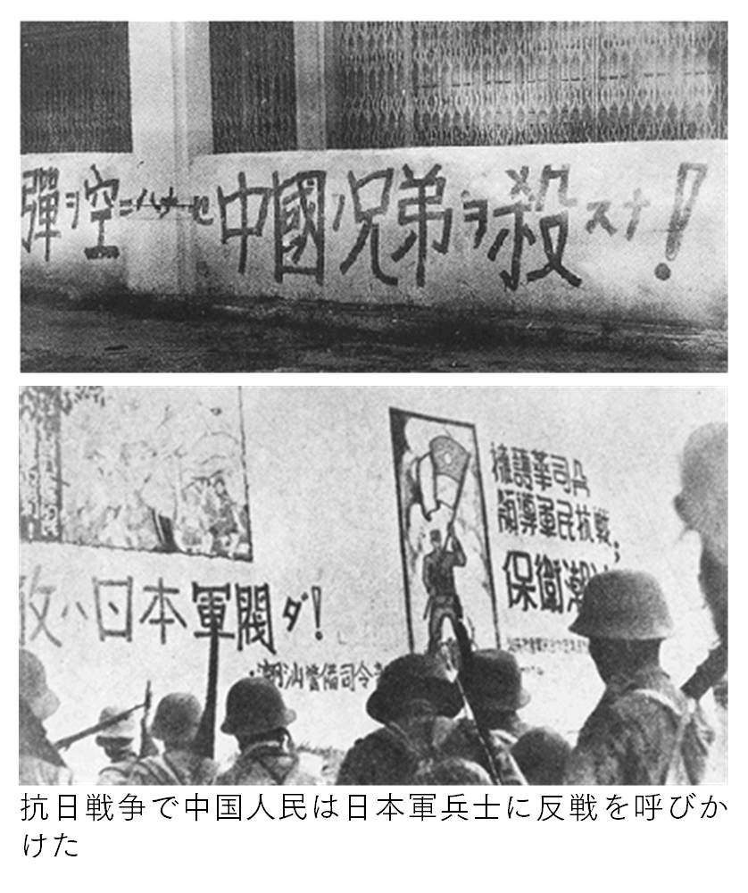
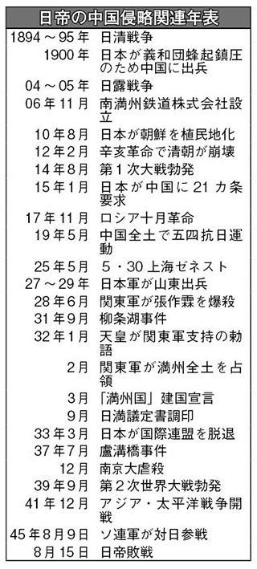

| ＥＵ諸国に広がるストの波 国際労働運動 | |
| 国際労働運動研究会 | |
| shuppan-saizensen (2019) | |
ＥＵ諸国に広がるストの波
国際労働運動vol.39 2018.12
目 次
羅針盤／改憲阻止の決戦に立とう
10 月24 日、安倍は臨時国会冒頭の所信表明演説で「改憲宣言」を発した。安倍は「政党が具体的な改正案を示す」と発言し、自民党改憲案の国会提出を突破口にして改憲発議に突進しようとしているのだ。この改憲宣言のなかで安倍は「強い日本」を打ち出し、「新たな国創り」と称し、さらに「日本外交の総決算」を掲げ、改憲から戦争国家化へ一気に突進しようとする方向性を打ち出した。
安倍は森友・加計疑獄、さらに片山などの不正・腐敗については徹底的に開き直り、補正予算案を11 月上旬に強行採択させ、一気に改憲の国会論議の火蓋 を切ろうしている。
これに対して日本維新の会、未来日本などは「改憲推進」を誓い、国民民主党も改憲論議に乗る姿勢を示している。だが日本共産党をはじめとする野党勢力は安倍の改憲強行方針の激しさに対する危機感のかけらも示していない体たらくだ。安倍が第４次安倍内閣に日本会議のメンバーを９人も入閣させ、衆院憲法審査会幹事を総入れ替えし、自民党改憲推進本部と一体で改憲をクーデターとして強行する体制を敷いているにもかかわらずにだ。
だが、安倍政権の危機と動揺は深刻である。安倍政権に対する労働者人民の不信と怒りの爆発の結果、沖縄県知事選、那覇市長選、さらには千葉県君津市長選、兵庫・川西市長選で自民党は相次いで敗退している。労働者人民が改憲と戦争に反対して今この時点で渾身 の力をこめて決起すれば、必ず安倍を打倒することができるのだ。今こそ改憲と戦争を阻止する時だ。
ＥＵ諸国に広がるストの波
■国境を越えて団結するＥＵ労働者
■戦後世界体制の総崩壊とＥＵ情勢
はじめに
11 ・４全国労働者総決起集会―改憲阻止！１万人大行進は、改憲・戦争阻止の闘いを圧倒的に前進させるものとして勝ち取られた。アメリカ、韓国、ヨーロッパ、中国など全世界で続々とストライキ闘争に決起している労働者階級と国際的に連帯して新自由主義の労働運動解体攻撃と闘いつつ、新たな世界戦争を阻止する闘いの決定的前進が日本でも勝ち取られたのだ。
11 月労働者集会の大成功は改憲と戦争に突進している安倍政権に重大な打撃を与えている。この闘いは米帝トランプとともに東アジアにおける新たな侵略戦争に突進している安倍政権と米帝トランプ政権に対し、日本、韓国、アメリカ、中国の労働者が国境を越えて国際的に団結して闘う重要な突破口を切り開いた。まさにこのような闘いこそが世界戦争を阻止する唯一の道であることを全世界に指し示している。
われわれはこのような労働者階級の国際的団結をさらにいっそう発展させることによって、新たな世界戦争が始まる前に阻止する世界的な運動をつくり出していくであろう。
そのためにはわれわれは韓国、アメリカ、ヨーロッパ、中国など全世界で、各国の労働者階級が今日いかなる階級的闘いを組織して闘っているのかを正確に把握し、その闘いと国際的に連帯する運動を全世界に創出していかなければならない。
本特集は、このような日本の労働者人民の闘いと一体となって、ＥＵ全域でストライキ闘争で新自由主義と闘いつつ、世界戦争を労働者の国際的団結で阻止しようと歴史的決起を開始したＥＵ労働者の闘いに肉薄している。
第１章は、ＥＵ全域で澎湃 と巻き起こっている労働者階級の新自由主義政策に対するストライキ闘争の新たな発展の姿を具体的に紹介している。イギリスのＥＵ離脱に関する再度の国民投票を要求する67 万人の大デモや、全国57 大学４万人の講師の全国統一スト、鉄道労働者の「一人乗務反対」のストライキなどが紹介されている。またフランスの鉄道労働者のストライキと、それを支援する大学進学制度の改悪に反対する大学生と高校生の闘いの意義を明らかにしている。東欧諸国の反動政権と闘う労働者の新たな闘いについて論及している。
第２章は、イギリスのＥＵ離脱などをはじめとするＥＵの解体情勢の下で、増大する域内移民労働者の国境を越えた団結と闘いが発展している現状が明らかにされている。またＥＵに加盟した東欧諸国の諸政権の反動化に対する労働者階級の反撃の開始がＥＵ内の階級闘争に与える影響についても言及している。
第３章では、現在ＥＵが直面する諸問題を説き明かすとともに、ヨーロッパ統合の歴史的経緯が明らかにされている。その上で現在のＥＵにおける新自由主義的労働者支配の現実を階級的労働運動で打ち砕く闘いの重要性が明らかにされている。
第１章 英・仏・中東欧で頻発するスト――国境越えた労働者の統一行動
世界恐慌の底なしの激化と戦争情勢の接近のなかで、ＥＵをとりまく情勢は深刻化し、政治的不安定、右翼的政権の登場が相次いでいる。こうした情勢に対して、ＥＵ諸国・ヨーロッパの労働者階級は、各地で「生きさせろ」の声を上げ、体制内労働運動指導部の屈服の壁と激突しながら、労働者の階級的団結の強さを示すストライキを展開している。ＥＵ全域にわたって、階級闘争の現局面をみてきたい。
（１）激動期に突入したイギリス
大デモ・大ストライキの激発
ＥＵ離脱問題で国内外の緊張が高まっているイギリスで10 月20 日、離脱に関する再度の国民投票を要求して、全土で67 万人の大デモが行われた。これは、世界恐慌のただなかでの労働者階級人民への新自由主義攻撃に対する怒りの爆発である。メイ保守党政権が、80 年代サッチャー以来の保守党・労働党政権の政策を受け継いで、医療・社会保障・教育などの分野における緊縮政策を強行し、イギリスにおける戦後的福祉国家体制は系統的に解体されてきたことへの反撃である。
年初、２月23 日、イギリス全国の57 大学の４万人の教員が、第２波の全国統一ストを行い、キャンパスでは２日間にわたって講義がとまった。これは、イギリスの大学ストで歴史的に最大規模の闘いであり、この間のイギリス労働運動全体からみると、２０１６年の青年医師のストライキ以来の大闘争である。
大学の教員たちを決起させているのは、年金の40 ％カットという大攻撃への怒りである。教育費削減の一環として大学年金制度の解体が開始されているのだ。
この決起に呼応して、大学生が共闘に立ち上がり、大学当局の恫喝や暴力的弾圧に抗して、各地でストのピケットに加わっている。
鉄道労働者の「一人乗務」反対闘争
このような激動の最先端でストライキ闘争を継続してきたのが、鉄道労働者だ。当面の争点である一人乗務反対闘争が、数年来、ロンドン地下鉄・都市交通をはじめ、イギリス全土の鉄道路線で闘われてきた。
１９９４年に民営化されたイギリスの鉄道では、車掌を廃止し、運転士がドアの開閉と列車の出発・進行をすべて引き受けるというＤＯＯ （一人乗務制度） の導入が、分社化された各社で行われてきた。しかし、鉄道労働者の反撃にあって、現在、旅客列車で一人乗務が約30 ％、残りの70 ％の列車には６８００人の車掌が乗務しているという状況である。軽量列車、あるいは電車・バスなどは、ほとんど一人乗務になり、新しく製造される車両は、一人乗務用に設計されている。
ＲＭＴ（鉄道海運運輸労組）のもとで、一人乗務反対闘争は継続的に闘われ、この２年間で８回にわたるストが行われている。無人駅の増加、切符窓口の廃止などと並んで強行されてきた一人乗務制度は、駅でのドアの開閉をめぐる事故の頻発、そしてなによりも運転士に、列車の運転に加えて過大な重圧をか
けるという攻撃で、鉄道労働者の闘争の中心課題となっている。
ＲＭＴは「車掌廃止反対」「安全を守れ」のスローガンを掲げてストライキを組織してきているが、執行部は労資協調的なＡＳＬＥＦ（鉄道運転士労組） の動きにも撹乱 され、分社化された鉄道会社との個別の交渉で「車掌代行」の導入などで当局との間の妥協をさぐる姿勢を示しており、職場からの階級的労働運動の強化が課題となっている。
日本におけるＪＲによる乗務員勤務制度解体の攻撃と、階級的に共通する攻撃である。
イギリス国鉄の民営化の主要な柱、上下分離（鉄道輸送業務と鉄道インフラ事業との分離）と並んで掲げられた「オープン・アクセス」は、ＥＵをこえた規模での国際的競争戦に鉄道事業をさらすものであり、そこから必然化する効率第一の強要の結果、イギリス鉄道は、民営化直後から数年にわたる重大鉄道事故（２０００年にロンドン近郊のハットフィールドで、レール破断により列車脱線転覆事故が起き、死者４人を出した〔『日刊・動労千葉』６２４３号など〕）を引き起こし、早くも２００２年に抜本的手直しを余儀なくされ、現在にいたっているが、一人乗務の強行は、こうした危機のなかで生じているのである。
このようなイギリス鉄道労働者の長期ストライキ闘争は、フランス・マクロン政権の「国鉄改革法」の攻撃と闘い続けているＳＮＣＦ（フランス国鉄）労働者と連動するものである。
（２）仏国鉄労働者の闘争に学生が連帯
今も続く鉄道ストと労学合流
フランスでは、繰り返し報道してきたように、昨年、マクロンの大統領着任と同時に開始された労働法制改悪攻撃に対して、数カ月にわたるストとデモがパリを先頭に全国で闘われた。
今年に入ってからは、ＳＮＣＦ（フランス国鉄）の労働者が、民営化攻撃と同時にかけられてきている鉄道労働者の既得権の剝奪策動に対して、「週５日の労働日のうち２日はストライキ」という闘争方法で、４月から８月のバカンス入りまで闘争を継続し、現在も闘いは終わっていない。
注目すべきなのは、鉄道労働者のストライキ闘争に、大学進学制度の改悪に反対する大学生と高校生が、それぞれ、校舎の封鎖、あるいは教室の占拠をもって呼応し、各地の駅での鉄道労働者のピケットに参加するという労学連帯がかちとられていったということである。
既成指導部の裏切り
こうした高揚にもかかわらず、労働運動の既成指導部、とりわけＣＧＴ（労働総同盟＝旧共産党系）は、ゼネストを組織してマクロン政権との政治的決戦を構えることを徹底的に避けて、「週５日の労働日のうち２日はストライキ」を繰り返しながら、政府との交渉の落としどころを探す、という裏切り的闘争方針に固執したため、ＳＵＤ（連帯労組）などの戦闘的部分との間に、政治的亀裂が生じて現在にいたっている。
（３）右翼政権と闘う中東欧の労働者
右翼政権の軒並みの登場で問題となっている中東欧諸国で、階級闘争の新たな爆発が起こっている。【第２章参照】
ポーランドでの反動化の進行
ポーランドは、２０１５年に成立した「法と正義」の政権のもとで、右翼的強権的な政治が展開され、難民・移民問題での排外主義的な政策を進め、ＥＵ委員会から警告を発せられる状況にまでいたっており、中東欧諸国の政治の反動化の代表として登場している。
２０１５年の総選挙で、市民連合派を破って政権についた「法と正義」の党は、アンジェイ・ドゥダ大統領―ベアタ・シドゥウォ首相のもとで、反ＥＵの姿勢を押し出し、国内では、最高裁判事の職務期間を管理する法案を提出し、司法介入を強めるなどの反動的政策を強行し、最高裁判所の長官の指名を大統領が行えるようになった。
ポーランドの現政権によって強行されている司法改革は、三権分立の解体であるとして、ＥＵ委員会から、ＥＵ規約違反として提訴されている。政府は７月初旬に、裁判官の定年を65 歳に引き下げたが、これは政府の見解にそった形での裁判官の人事の入れ替えを狙ったものとして、司法内部からも反対されている。現最高裁長官マルゴザータ・ゲルスドルフは、辞任を拒否している。
闘う労働運動の再生めざす闘い
しかし、ポーランドの労働者人民は、１９９１年東欧スターリン主義圏の解体、ＮＡＴＯへの加盟（１９９９年）・ＥＵ加盟（２００４年）によって、ヨーロッパ帝国主義の支配のもとに包摂され、スターリン主義支配からの脱却が、新自由主義攻撃の開始の合図となるという経過のなかで、闘いをやめたわけではない。
このような強権支配体制、とりわけ司法改革に反対するデモでは、「恥を知れ！」「裁判所の自由を守れ」「民主主義を死なせるな」などと叫び、ろうそくを掲げ、あるいはポーランドの国旗とＥＵの旗を並べて打ち振る、という場面も見られた。
また、カトリック勢力など保守派の〝命を守れ運動〟をバックとして、政府が強行しようとしている「中絶禁止法」の制定に反対する大衆的抗議行動も激化している。
かつて80 年代、ソ連スターリン主義の支配下にあって、グダンスクの造船所労働者を先頭とする反乱の象徴となった連帯労組の委員長だったワレサが、新体制の成立後大統領に就任し、新自由主義攻撃の推進者となって、連帯労組の体制内化を強行するという転向・裏切りを行った。このような労働運動の逆流に抗して、ポーランド労働者階級は、闘う労働運動の再生、労働組合の再組織化の闘いを開始した。
２０１５年の鉱山ストをのろしとして、郵便労働者をはじめとする公共部門労働者が、ストライキで賃上げを要求している。【本誌２０１５年５月号（前進社発行）の「鉱山スト、ポーランド全土を揺るがす」参照】
チェコ―自動車労働者がストライキ
中東欧諸国での闘いは、ポーランドにとどまらない。隣接するチェコでもストライキ闘争が展開されている。チェコは、ヨーロッパの中心に位置し、インフラが整備されており、それに低賃金である、というＥＵブルジョアジーにとって「有利な条件」を備えているということから、すでにＥＵ加盟以前から、ドイツ自動車資本フォルクスワーゲン社などの着目するところとなった。同社は、伝統ある地元のスコダ社を買収し、傘下に入れていた。その労働者３万人が、３月、賃上げ、労働条件（過酷なシフト制など）の改善を要求してストライキに突入した。
いまや、「東のデトロイト」と呼ばれるにいたっているチェコの自動車産業労働者の決起は、東欧諸国の闘いへののろしである。
チェコをはじめ、中東欧諸国には、プジョー、シトロエンなどのヨーロッパ自動車資本にとどまらず、トヨタ、現代 など日韓からも「有利な条件」に注目して、工場進出が行われている。
その他の東欧諸国でもスト
スロバキアでは昨年夏、フォルクスワーゲン社の８千人の労働者がストに立ち、14 ％の賃上げを獲得している。
ルーマニアでも、昨年12 月、やはりフォルクスワーゲン社の１０００人の労働者が、御用組合の締結した低賃金の協約締結に反対して、職場からのストライキに決起した。
既成労組の資本への屈服に対する闘いは、すでに述べたポーランドでは、連帯労組支配からの脱却として開始され、その先頭に立っているのが、フォルクスワーゲンの自動車労働者である。全労働者の３分の１を占める非正規職労働者と青年労働者の組織化を最重要課題として取り組みが行われている。
オーストリアでも反撃の闘い
文字通り中東欧の歴史的地理的中心に位置してきたオーストリアで、６月、10 万人のデモが首都ウィーンの街頭を埋め尽くした（ウィーンの人口は１８６万人）。２００３年の年金カット抗議デモ以来、最大規模の闘争である。現行の８時間労働制を12 時間に、週40 時間制を60 時間に、それぞれ延長するという、いわゆる〈労働時間の柔軟化〉への怒りの抗議である。
昨年10 月に成立した右翼政権は、年金・健康保険・教育制度などに対する根底的改革を呼号し、その強行のために、弾圧機構の強化、移民・難民排斥を掲げる排外主義的民間組織の結成（〝市民改革同盟〟）などを開始しているが、この攻撃への最初の大反撃である。
（４）国境を越えた非正規労働者の決起
アマゾンのストの決定的意義
現在のヨーロッパ労働運動で注目すべきもうひとつの闘いは、国境を越えた非正規職労働者の全ＥＵ・ヨーロッパ的統一行動の開始である。
本誌vol. 37 で報告したように、「格安運賃」を看板とするヨーロッパの航空会社ライアンエアが、これを成り立たせてきた低賃金・無権利の非正規職労働者のストライキに各国で直面しているように、「即日配達」で世界の流通業界を支配しているアマゾンでも、「奴隷労働」「ロボット化」を強制されてきた労働者が、数年来、ストライキ闘争を国境を越えて展開している。
アマゾンは、アメリカに本部を置く世界的な巨大物流センターで、ヨーロッパ（ドイツ、フランス、イタリア、スペイン、オランダ、イギリス）、日本、中国、ブラジルなど13 国に配送センターを持ち、電子管理による「即日配達」を看板としている。
２０１３年来、アマゾンを揺るがすストライキが、各国で開始された。しかし、現在にいたるもアマゾンの会社側は、組合と労働協約を締結することを拒否し、若干の労働条件の手直しを行っただけで現在にいたっている。
昨年の「年末大売出し」にぶつけて闘われたストライキを引き継いで、今年７月、「夏季大売出し」を直撃する闘争がヨーロッパ各地のアマゾン事業所で行われた。
ドイツでは、全国６カ所で一日スト、イタリアでもストをやったうえで、年末までの残業拒否を打ち出した。スペインでは３日間のスト。ポーランドのアマゾンでは順法闘争に入った。
アマゾン労働者の直面する現実は、「奴隷労働」「労働者のロボット化」などと呼ばれているように、スタジアムのような広大な作業場で電子操作に従って、配送の商品を集めるために一人ひとりの労働者が歩く距離が毎日十数キロ、夏冬をとおしてエアコンなし、無給の残業の強制、監視カメラによる作業のスピード・効率の点検、成績の査定による解雇、というような過酷な労働条件である。労働者の大多数は、短期契約で、繁忙期には膨大な外国人労働者が動員される。その状況は、１９９４年アマゾン始業以来、次第に社会的問題となり、マスメディアの潜伏取材（アマゾン労働者には、職場の現実に関する情報を外部にもらさないことが強要されている）で、しばしば問題となってきていた。
ちょうど、日本のクロネコヤマトの現場（『前進』18 年10 月18 日付）、ブラック企業セブイレブン（『序局』第19 号）、さらに佐川急便などを思わせる状況だ。
これら諸国のアマゾン労働者は、９月末にドイツのバートヘルスフェルトという都市で、国境を越えた共闘会議を結成し、国際連帯の確立、闘争の強化へ向けての討論を行っている。
格安航空ライアンエアの闘争と並んで、非正規職労働者の国境を越えた共同闘争として、新自由主義攻撃に反撃する闘いの一つの柱として、ますます重要な意味をもってくる。
ライアンエアのスト闘争の発展
格安航空ライアンエアの闘争では、７月末の第１波、８月11 日の第２波に続いて、９月28 日に、ベルギー、ドイツ、イタリア、オランダ、ポルトガル、スペインの６カ国の客室乗務員が24 時間ストに決起した。今回のストには、ドイツのパイロット組合が参加した。
組合との交渉は、それぞれの組合と個別に行われており、協約の締結も別々である。各国の労働組合は、こうした個別交渉方式を受け入れてしまっている。その結果、イタリアの組合との交渉が、最近妥結したことから、今回のストにイタリアの労働者は参加していない。そのイタリアのライアンエア労働者５００人のうち３００人が属しているAnpac労組が８月28 日に締結した協約の内容は、労働者の要求に応えるものではない。それどころか、スト禁止、組合代表の自由選挙禁止などの条項を含んでいる。イタリアの他の二つの労組 （Filt Cgil, Uiltransporti） は、これを認めず、スト続行の立場を打ち出している。
「社員の75 ％が時間給の契約社員」という非正規雇用のうえに成立してきた格安航空会社の現実は、決して、ライアンエアだけの例外的現象ではなく、ＥＵ・ヨーロッパ、そして全世界に拡大しつつある新自由主義攻撃の典型的な例である。
闘争が国境を越え、パイロットと客室乗務員が共闘していることに、ライアンエア・ストの重大な意義がある。
階級的労働運動の国際連帯を
以上みてきたようなＥＵ・ヨーロッパ諸国の労働者階級人民の闘いは、二つの世界戦争を経て形成された帝国主義の世界体制が、延命の最後的手段としての新自由主義攻撃の破綻のなかで、もはや労働者階級人民を生かしておくことができず、あらゆる階級的団結形態を分断・解体し、搾取・抑圧・差別を極限化して、帝国主義相互間の争闘戦に打ち勝とうとしている現実に真っ向から対決するものである。
安倍・トランプなどの絶望的で凶暴な攻撃と闘っているわれわれとまったく共通の現実に直面しているのである。
日韓米を軸とする階級的労働運動の国際連帯が、ＥＵ・ヨーロッパ、さらに中東・アフリカ、さらに中南米などの闘いとの戦闘的大衆的合流をかちとることが、労働者階級人民の未来の死活をかけた緊急の課題となっている。
１００年前に、全世界を揺るがしたロシア革命が切り開き、掲げた全世界のプロレタリアート人民の解放の事業を、今こそ受け継ぎ、実現する時だ。
第２章 英のＥＵ離脱めぐる激動――中東欧諸国の政治反動の深まり
（１）トランプの「アメリカ第一」と英のＥＵ離脱
２０１８年10 月、イギリスのＥＵ離脱期限（来年３月）が迫り、イギリスとＥＵとの離脱をめぐる交渉が難航している。そのなかで10 月20 日、ロンドン市長サディク・カーンや党派を超えた国会議員が出席して「２年前のＥＵ離脱国民投票のやり直し」要求の67 万人集会とデモが行われた。２０１６年の国民投票結果は「賛成51 ・９％、反対48 ・６％」という僅差であり、国論二分の中でイギリスはＥＵ離脱決定をした。デモに対してメイ政権は「やり直し拒否」を宣言している。
国民投票のあった２０１６年は、アメリカ大統領選挙にトランプが出馬し、「自国第一主義、難民排斥」キャンペーンを激しく展開した年だった。イギリスにおいても、財政難を理由にした医療等社会保障削減への怒りを「財政規律を迫るＥＵ」への批判に向け、非正規職化・格差拡大への怒りを移民労働者排斥に転化する排外主義が勢いを増した。サッチャー以来の新自由主義攻撃、〈民営化・規制緩和・労組破壊〉〈社会保障解体〉への階級的怒りが高まり、労働者の多くが現状変革を求めた。指導勢力が不在のまま、労働者は「ＥＵ離脱」賛否に分断された。
国民投票から２年たった今、２０１６年に離脱賛成票を投じた労働者の一部を含めて、離脱交渉の難航を前にして「ＥＵ離脱決定のやり直し」に立ち上がっている。
英メイ政権の離脱強行策は、米トランプの「アメリカ・ファースト」同様、英帝国主義の生き残りをかけた「内と外への侵略戦争」、階級攻撃であることは明らかになっている。英の強行離脱（ブレクジット）は、没落しつつあるロンドンの世界金融センターの地位を守り、「英とＥＵの貿易関係」を堅持・再形成することを追求しながら、人と物の「域内移動の自由」を終わらせることにある。ＥＵ離脱で国境を管理し、難民受け入れとＥＵ域内移民労働者の自由移動を止めることだけははっきりしている。メイ政権の強行離脱に対して野党・労働党は、党内で終始動揺し、政権にすり寄っている。
離脱争点は「域内他国労働者の権利保障」
ＥＵ離脱国民投票「やり直し要求」行動の先頭には、非正規労働者、中東欧出身移民労働者とともにインド系・中東系・アフリカ系の大英帝国植民地出身労働者が立っている。
すでにＥＵ域内だけ見ても人口の約３・１％、６６０万人がＥＵ域内の他国で働き暮らしている。外国人労働者は、旧植民地からの労働者だけではない。
２００４年ＥＵの東欧への拡大以後、イギリスは、従来のイタリア、スペインだけではなく中東欧諸国からの移民労働者・出稼ぎ労働者を大規模に受けいれてきた。ポーランド人85 万人、ルーマニア人17 ・５万人、リトアニア人15 ・５万人、東欧諸国を合計すると１２０万人になる。同時に、イギリス人労働者も数万人規模で職を求めてフランスやイタリアなどＥＵ加盟国に移住している。ドイツも例外ではない。ドイツは１５００万人の外国人労働者を受け入れ、国外で働くドイツ人は３００万人に及ぶ。
差別される域内他国労働者
ＥＵとイギリスは、２０１３年に「ＥＵ域内他国労働者の権利保護」の協定を結んでいる。協定では、「ＥＵ市民の基本的権利」として、雇用条件・報酬（賃金）・その他で出身国による差別を禁止している。だが、現実には、中東欧労働者の多くは、本国で雇用契約した「派遣労働者」であり、権利保障の対象にはならない。画然とした低賃金労働者だからこそ、資本家にとって域内他国労働者を雇うメリットがあった。
イギリスのＥＵ離脱をめぐる交渉は、①（すでに組まれている）ＥＵ予算案のイギリス分担分の支払い励行、②域内他国労働者の権利保障、③アイルランドと北アイルランド（英領）間の国境管理問題の三点に絞られている。戦後、「鉄のカーテン」によって、ヨーロッパが東西に分割されたが、帝国主義とスターリン主義による分割の突破は、第１次世界大戦で崩壊した旧ハプスブルグ帝国を形成していたオーストリアとハンガリーを隔てる国境の実力開放から始まった。
イギリスのＥＵ離脱は、国境、北アイルランド問題を浮上させ、二度の世界大戦の発火点となった中東欧を焦点化させている。
（２）ＥＵの始まり―独仏同盟の形成
ＥＵの前身のヨーロッパ経済共同体（ＥＥＣ） は、イギリスを排除して出発した。１９５２年に結成された「ヨーロッパ共同体」は、二度の世界戦争で交戦国となったドイツとフランスの二つの帝国主義国の同盟が軸になった６カ国の経済協力、「小ヨーロッパ構想」として出発した。イギリスが加盟したのは１９７３年１月であり、６カ国によるヨーロッパ経済共同体（ＥＥＣ）成立の20 年以上後のＥＣであった。
第２次大戦後の「米・ソによる戦後処理」は、ドイツを東西二分割し、東欧諸国を「ソ連圏」として分断し、その後「鉄のカーテン」によって東西ヨーロッパの分断は固定された。
第２次大戦緒戦でナチス・独軍に首都パリを占領されたフランスは、ロンドン亡命政権とドゴール将軍率いる在アフリカ軍とレジスタンスの存在によって、辛うじて戦勝国の地位を確保した。だが、米・英・ソのような発言力はなく、戦後処理をめぐる戦勝国のヤルタ会談の圏外にあった。
１９５２年当時、二つの大戦の主要対決軸となった敗戦国ドイツも戦勝国フランスも共に、大規模な長期戦争によって経済的・社会的総崩壊状況だった。二度の世界戦争で交戦国となったドイツ（西独）とフランス２国を軸にした６カ国の経済協力、「小ヨーロッパ構想」に基づくＥＤＣ（ヨーロッパ防衛共同体）の出発が今日のＥＵの基礎になっている。
「ヨーロッパ共同体」は、強大な米帝と「米帝のトロイの木馬」とみなした英帝に対抗するために、仏帝が、西独帝を引きこんで出発した共同市場だった。それは敗戦国・分割されたドイツと戦勝国・フランスによる対英米対抗的な「共通経済圏」形成だった。と同時に、ヨーロッパ共同体構想には、中東欧諸国を再び「ヨーロッパ世界」に包摂する狙いが含まれていた。
ヨーロッパ共同体の原案は、ドゴールのフランスと「中欧の大国」だったハプスブルグ帝国、オーストリアから出発しているといわれる。その中で一貫しているのは、東西に二分割されたドイツ帝国主義の「東方進出」衝動と中東欧民族主義の相克と結合であった。
（３）ＥＵによる中東欧諸国の包摂
１９８９年ベルリンの壁の崩壊、91 年のソ連スターリン主義崩壊・東欧スターリン主義圏の解体によって、ソ連支配から解放された東欧諸国は、第１次大戦後の１９１８年まではオーストリア・ハンガリー二重帝国（ハプスブルグ帝国）として、オーストリアとハンガリーを軸とする多民族国家を形成していた。その２国間の国境鉄条網の撤去、国境解放、「汎ヨーロッパ夏季ピクニック」が、その直後の１９９０年の東西ドイツの統合に始まる過程の口火を切った。
中東欧諸国のＥＵ加盟は、それから10 余年、２００４年になってやっと果たされた。その間、ＩＭＦ（国際通貨基金）の指導下にドイツ資本をはじめとする過剰資本・過剰生産力が、直接投資としてなだれ込んだ。中東欧の「安価な労働力」を求めた大規模工場移転で、労働者は新自由主義の激しい搾取・収奪にさらされた。ＥＵ加盟を果たし数年後には２００７～08 年世界恐慌の嵐をまともにかぶった。
（４）中東の激動と難民問題の発生
２００１年「９・11 」（アメリカの中枢ニューヨークへの攻撃）への報復として米帝のアフガン・イラクへの侵略戦争が始まった。
２０１１年「アラブの春」によって、チュニジアからエジプト、リビアへ拡大した労働者決起に対する反革命的攻撃によって、シリア、イラクでは今も戦火が続き、英仏帝とロシアの介入によって大規模な破壊と難民を生み出し続けている。
２０１５年９月、独帝メルケルの主導でＥＵは「ＥＵ内のギリシャとイタリアにすでに入っている難民12 万人をＥＵ定住者として受け入れる」という決定をした。そしてＥＵ加盟国に中東・アフリカからの難民受け入れを義務づけた。この「ＥＵ難民割り当て政策」は、新自由主義の絶望的破綻の中で泥沼化したアフガン、イラク、シリア、アフリカ侵略戦争が生み出した大規模な難民流出に対する苦肉の対応策だった。
２０１５年秋「ＥＵ難民割り当て政策」の段階で、イギリス、ドイツ、フランスへはすでにＥＵ域内移民労働者、そしてポーランド農民など季節出稼ぎ労働者が、数百万人規模で流入していた。ＥＵの「難民割り当て政策」を激しく拒否したのが、中欧のハンガリー、チェコ、スロバキアの３国だった。
ハンガリー、チェコ、スロバキアは、歴史的にはオーストリアを主軸にした多民族国家・ハプスブルグ二重帝国、実質的にはチェコ、スロバキアを含めた「三重帝国」としてあった。オーストリアは、１８６６年対プロシャ帝国（＝ドイツ）との戦争に敗れる前は、「ドイツ連邦の議長国」の位置にあった。オーストリアの首都ウィーンは、第１次大戦前は、人口２００万人の世界第６位の大都市だった。ハンガリーの首都ブダペストは、自動車・航空機産業の盛んな近代的大都市だった。オーストリアは、現在、第１次、第２次、二度の世界大戦を経て、総人口１０００万人規模の弱小国家になっている。
（５）中東欧諸国の極右政権化と移民・難民排斥
ハンガリーの独裁政権化
２０１４年７月、ハンガリーにフィデス党のオルバン政権が誕生し、15 年「ＥＵの難民割り当て政策」を拒否し、国境に鉄条網をはりめぐらせた。２０１８年４月選挙でフィデス党のオルバン政権は、三選された。オルバンは、「ハンガリーは、このままではＥＵの人質、債務国家になってしまう」と「ハンガリー第一」を掲げ独裁政権化している。
ポーランドの反動政権化
２０１５年５月、ポーランドでは「法と正義」党（カチンスキー党首）の政権が成立し、司法反動や女性差別等の内政での強権化を進めた。そして、農業補助金等、ＥＵからの補助金受給額がドイツに次ぐ第２位の受益国ながら、「ＥＵ難民受け入れ枠」を拒否した。
オーストリアでのネオナチの躍進
２０１６年５月、オーストリア大統領選挙でネオ・ナチ自由党が、第一党に躍進したが決選投票で辛くも中道右派が大統領の座を占めた。オーストリアは、国民の４・22 ％（約42 万人）がイスラム教徒。現在、オーストリア政権は、極右ネオ・ナチに突き動かされ、すでに内在化しているムスリムに敵対政策をとっている。「カトリック国家」として国政調査で宗教を記入させたが、国民の多くが「無宗教」「無記入」で答えた。今年２０１８年６月、オーストリア政府は、七つのモスクを閉鎖し、60 人のイスラム教師・イマムを国外追放するという突出した政策をとった。そして、女性のベール（ブルカ）禁止法を発令した。
このような中東欧諸国の反動化にたいする労働者階級の反撃は、第１章で報告した。
第１次大戦、第２次大戦の発火点となった中東欧諸国は、ヨーロッパ世界と中東、ロシア・ウクライナの狭間にある矛盾の集約点として、今後も注目し続けなければならない。【本誌vol. 27 「労働法制改悪にＥＵで総反撃／Ⅲ ＥＵ揺さぶる移民・難民の波」参照】
第３章 ＥＵの歴史的形成・変容・崩壊――大爆発する新自由主義の矛盾
（１）労働者の国際連帯こそ勝利の道
戦後世界体制の基軸国から転落した米帝トランプは、絶望的な通商戦争から世界戦争への道へ転がり落ちつつある。中国・日本・ＥＵ・ロシアなどの帝国主義・大国の支配階級に「アメリカ第一」「偉大なアメリカを再び」と、こぶしをふりあげているトランプは、その足元を、教育労働者を先頭とする広範なアメリカ労働者階級人民、中南米から押し寄せる難民・移民など広範な人民大衆の新自由主義への積もりに積もった怒りの爆発によって揺るがされている。
トランプの攻撃の標的となり、対米対抗の姿勢を打ち出さざるをえなくなっている中国・ＥＵ・ロシア、そして追いつめられた日本などの帝国主義・大国も、国内では、激化する世界恐慌による生活破壊と緊縮政策に抗議する労働者階級人民の新たな決起に直面している。
日帝・安倍の改憲攻撃は、「戦争のできる国」への飛躍をめざして排外主義をあおりたて、労働者の戦争体制への動員、他国の労働者との殺し合いの強制をつうじて階級的団結を破壊し、帝国主義としてのぎりぎりの延命を図ろうとする絶望的な攻撃である。韓国民主労総の労働者が示した「ロウソク革命」による政権打倒、アメリカ教育労働者のストライキ闘争の全米的拡大と、われわれ日本における改憲・戦争阻止！大行進、動労総連合を先頭とし、自治労・日教組の戦列の強化をつうじたゼネストへの陣形の形成をもって階級的労働運動の国際連帯の前進をかちとることこそが、未来を切り開く道である。
（２）ＥＵの直面する諸問題
この激動情勢のただなかで、アメリカ・中国・日本に次いで、ＧＤＰ（国民総生産）世界第４位に位置するドイツを基軸とし、中東欧諸国を包摂する大経済圏を形成するにいたったヨーロッパ連合（ＥＵ）は、新自由主義の強行が大恐慌の爆発において破産し、戦後世界体制のもとでの帝国主義国家連合の矛盾を極限的に激化させている。さらに、 ＥＵの歴史的勢力圏であり、新自由主義によって経済構造・階級的構造・階級闘争のあり方が激変した中東、アフリカ、西アジアなどをめぐり、隣接するロシア、「一帯一路」を掲げて進出している中国との争闘戦に直面している。
ＥＵの直面している諸問題は、次のような諸項目にまとめられるであろう。
①イギリス帝国主義のＥＵ離脱問題の内外にわたる危機性。
②そのイギリスを先頭に、ドイツ・フランスをはじめ、イタリア、スペインを含むＥＵの中心的諸国で、政権への不信が極点に達し、政治危機が激化していること、そして中東欧諸国では、軒並みに右翼、中道派などの政権が成立し、全ＥＵにわたって、ファシスト的運動が街頭勢力から、議会内にまで進出してきている【表参照】。
③その背景には、経済危機、内戦の激化などのただなかにある中東・アフリカ・西アジア諸国からの難民・移民が膨大にＥＵ諸国に殺到し、従来のヨーロッパ諸国における移民（外国人労働者）問題のあり方を一変させていることがあるが、事態の根底には、ＥＵ諸国自体、新自由主義の破産がつくりだした社会の崩壊状態があるということだ。
④これは、いわゆる〈ヨーロッパの病人〉と呼ばれるギリシャなどの国々にとどまらず、ＥＵ離脱問題で揺れているイギリスをはじめ、ドイツ、フランスなどの基軸国でも――あるいは、まさにそれゆえに――新自由主義の強行による社会保障制度・医療制度・教育制度などの解体、戦後的社会の枠組みの崩壊、社会不安の拡大が渦巻いているということ。
⑤これら諸問題のすべてが、緊縮政策の強行による生活破壊にとどまらず、雇用形態の改変、労働法制の改悪、労働運動・労働組合の解体など、労働者階級の階級的団結の破壊として集中してきている、ということである。
⑥ＥＵ内外の軍事的諸問題、ＮＡＴＯ（北大西洋条約機構）をめぐる米欧、さらにロシア・中国との関係などについては、こうした基底的諸問題をふまえ、階級的観点から考察すべきである。
（３）ヨーロッパ統合の戦後史的展開
ヨーロッパ統合と戦後世界体制の形成
現在のＥＵ（ヨーロッパ連合）にいたる帝国主義のヨーロッパ統合組織が形成された出発点は、第２次世界大戦後の戦後世界体制を構築していく過程にあった。
▼独仏の米帝への依存
①二つの世界大戦で大打撃を受け、どう再生するかという死活のかかった課題に直面していたヨーロッパ帝国主義は、戦勝国であるはずの英仏が独力では再建することができず、第２次世界大戦のヨーロッパ戦線に、圧倒的な軍事力の投入によって決着をつけたアメリカ帝国主義への経済的政治的軍事的依存の道をとる以外になかった。
▼ソ連スターリン主義の動向
②ヨーロッパ帝国主義の戦後再建が直面したもう一つの現実は、帝国主義世界戦争に米英仏とともに加担したソ連スターリン主義の動向だった。スターリンは、ナチス・ドイツ帝国主義の東方侵略に対して、ヒトラーと独ソ不可侵条約を締結することをもって対応しようとしたが、これを破棄したドイツ軍のソ連侵攻によって、第２次世界大戦に引きずりこまれ、「民主主義対ファシズム」を掲げて、米英仏帝国主義の側に立って参戦した。
▼帝国主義との融和と反革命的参戦政策
③ソ連スターリン主義は、29 年恐慌によって爆発した全世界的な30 年代の内戦・内乱を、ロシア革命の継続のチャンスとしてプロレタリア世界革命に転化しようと決起した労働者階級人民の闘いに敵対した。ファシズムを生み出すにいたった帝国主義の世界的打倒ではなく、一国社会主義の利害から帝国主義との融和を図り、「ブルジョア民主主義のファシズムからの擁護」を掲げて、圧殺したのだ。その結果が、第２次世界大戦の勃発であった。ロシア革命におけるボリシェヴィキの「帝国主義戦争を内乱へ」に真っ向から敵対する反労働者的･反革命的行為である。
▼米英ソによる戦後処理
④第２次世界大戦の戦後処理＝戦後世界の再編成（再分割）が、戦勝国であった米英ソの３国間で協議・決定された〔フランス帝国主義は、ドイツ軍の侵攻に１カ月足らずで降伏したことから、戦勝国であるにもかかわらず、協議から除外された〕。米英ソは、ヨーロッパを、敗戦帝国主義ドイツの東西分割を軸として、帝国主義圏とスターリン主義圏に分断することを決定した。その狙いは、第１次世界大戦後の世界体制再建において、英仏主導の「ベルサイユ体制」のもとで、ドイツ帝国主義に対して報復的制裁措置（膨大な戦争賠償金の請求・軍事力の制限・領土の剝奪 など）を強制したことが、ナチス・ドイツの登場の動機となったという歴史的事実をふまえて、ドイツ帝国主義を戦後世界体制の枠の中に閉じ込めるということであった。これは、第１次世界大戦・ロシア革命を引き継いだドイツ革命の再発への予防反革命的措置でもあった。
【第２次世界大戦のもうひとつの戦場であったアジアにおいて、太平洋戦争での敗戦国である日本帝国主義が、日米安保体制へ組み込みこまれ、アジアにおける戦後体制の軸となったことが、これに対応する。日帝は、第１次世界大戦後の世界体制で、ロシア革命への反革命干渉戦争に当初から出動し、シベリア出兵を１９１８～21 年まで続け、アジアにおける新興侵略勢力として、英仏米帝国主義によって軍備縮小を要求されていた（ワシントン軍縮条約）が、これに抗して、早くも１９３７年の日中戦争の開始によって、アジアにおいて世界大戦の口火を切っていたのである】
１９９０年のドイツ東西統一、１９９１年の東欧・ソ連スターリン主義圏解体＝ＥＵ・ＮＡＴＯ体制への組み込みは、この戦後体制がヨーロッパにおいて決定的に崩壊したこと、戦後ヨーロッパが転機を迎え、新たな矛盾を抱え込んだことを意味する。
▼帝国主義とスターリン主義による戦後世界体制の形成
⑤ここで注目すべきなのは、こうした戦後世界体制形成の過程で、帝国主義間争闘戦は、その戦後的継続として、内部的矛盾・軋轢 を含みつつ、スターリン主義を巻き込んで行われたこと、そして同時に、帝国主義諸国、スターリン主義諸国での階級闘争と旧植民地諸国の民族解放闘争が、帝国主義・スターリン主義によって分断・抑圧されてきたことである。帝国主義国間・大国間の争闘戦とともに全世界の労働者階級人民・被抑圧諸民族人民への階級戦争が、戦後世界体制成立の基軸となっていることである。【帝国主義諸国（日仏伊など）における戦後革命の圧殺、ギリシャ、ユーゴ、ポーランドなどの反ファシズム・レジスタンス闘争の解体、等々】
▼米帝に依存した帝国主義諸国の再建
⑥第２次世界大戦が、米軍のヨーロッパ戦線への投入によって、初めて軍事的決着がつけられたように、疲弊した経済からの戦後ヨーロッパ帝国主義の再建・復活においても、アメリカの経済援助（「マーシャル・プラン」１９４７年）、軍事的にはアメリカを盟主とするＮＡＴＯの結成（１９４９年）によって出発点が与えられた。ソ連スターリン主義の世界再分割への登場、国内の労働者階級人民の反乱への対応が要求される状況のなかで、新たな帝国主義間争闘戦が、戦勝国の内部でも不可避であった。
第２章で述べたように、二つの世界大戦の戦後からのヨーロッパの再建を、アメリカ帝国主義に依存しなければならないことに反発したフランス帝国主義が、１９５０年に「シューマン・プラン」を提出し、米英に対抗するヨーロッパ再建の経済的基盤として、ヨーロッパ石炭鉄鋼共同体（ＥＣＳＣ）を１９５０年に設立した。これは、独仏間の歴史的紛争地帯であるルール地方とザール地方の資源と工業施設を、ヨーロッパ諸国の共同管理に置くことによって、ヨーロッパ経済の再建の基礎にしようという計画であり、これに、フランス帝国主義の歴史的敵手ドイツの西半分を巻き込んだヨーロッパ統合の展望を、新たに提出したものであった（28 ㌻の地図参照）。
▼ヨーロッパ統合の推進と危機の展開
⑦この後、ヨーロッパ統合は、１９５７年にヨーロッパ経済共同体（ＥＥＣ）とヨーロッパ原子力共同体（ＥＵＲＡＴＯＭ）が結成され、１９６７年には、この二つの組織とヨーロッパ石炭鉄鋼共同体（ＥＣＳＣ）が統合されて、ヨーロッパ共同体 （ＥＥＣ）が結成されるにいたる。結成時の参加国は、フランス、西ドイツ、イタリア、ベルギー、オランダ、ルクセンブルクの６カ国であった。１９７３年に、フランスの反対で加盟を拒否されていたイギリスに続いて、アイルランド、デンマークも参加し、さらに80 年代にはギリシャ、ポルトガル、スペインを加えて、12 カ国体制となる。１９９３年には、ヨーロッパ連合（ＥＵ）と改名し、「労働力・資本・商品・サービスの自由な移動」という新自由主義の政策を掲げて改組した。そして、２００４年以後、旧東欧スターリン主義圏諸国が次々と参加、ＥＵの構造、様相は一変した。
戦後世界体制の行き詰まり
こうしたヨーロッパの戦後的統合と危機の展開の歴史は、アメリカ帝国主義の主導でソ連スターリン主義を組み込んで形成された戦後世界体制の発展、その内的矛盾の爆発の過程であり、最末期帝国主義の歴史的生命が尽きたこと、この帝国主義の歴史的危機を、プロレタリア世界革命に転化する全世界の階級闘争と民族解放闘争を「社会主義」の名で抑圧し、裏切ることによって、帝国主義の延命を支えてきた反革命スターリン主義の体制的破産を意味するものである。
▼ヨーロッパ統合の結節点
ヨーロッパ統合の展開で押さえておくべきいくつかの結節点は、次のとおりである。１９５５年、西ドイツ帝国主義の再軍備が承認され、ＮＡＴＯ参加が決定された。【日米間の講和条約と日米安保条約が締結されたのは１９５２年、米英仏ソの４大国に中国が参加したジュネーブ会談で、朝鮮戦争・ベトナム戦争の停戦が論議されたのは１９５４年である。】
こうして、日本に２年遅れて国際政治舞台に復帰した西ドイツ帝国主義は、１９６３年、戦後的経済発展のうえに立って、歴史的な独仏連合を結成する（エリゼ協定）。フランス帝国主義は、この間、１９５８年、旧植民地アルジェリアの民族解放戦争の激化で政治危機を迎え、ドゴールのもとで第五共和国に政体を転換し、対内的には強権政治を行い、対外的にはＮＡＴＯにおける地位の強化を主張し、敗北してきた。
この過程は、戦後世界体制のもとでの帝国主義世界経済の「平和的」発展の時期で、敗戦帝国主義に日独が、それぞれに高度成長を遂げ、世界経済における位置を拡大してくる時代だった。それは、かつての大英帝国イギリスの決定的地位低下とアメリカ経済の覇権を揺るがすものだった。
▼１９７４～75 年恐慌と戦後発展の行き詰まり
その結果が、１９７４～75 年世界恐慌の爆発である。１９２９～37 年世界恐慌以来、「もはや恐慌のない時代」を謳歌してきた帝国主義戦後経済が、戦後的発展の壁にぶつかり、アメリカ経済を先頭に失速したのだ。政治軍事的には、ベトナム侵略戦争におけるアメリカ帝国主義の敗北が重なり、戦後世界体制は、形成から30 年にして壁にぶつかった。
１９７４～75 年世界恐慌の基底にあるのは、資本主義＝帝国主義の根底的矛盾である過剰生産力・過剰資本の蓄積であるが、直接の契機は、アメリカ帝国主義の世界経済における支配的位置の動揺、第２次世界大戦での敗戦帝国主義である日独の経済的発展による力関係の激変である。
他方では、新植民地主義体制諸国を含めた世界におけるアメリカ帝国主義の政治的軍事的制圧力の低下である。第１次世界大戦・ロシア革命から29 年恐慌までの約10 年間に比べれば、やや長期にわたる「平和的発展期」のなかで、戦後、新植民地主義体制諸国と呼ばれた諸国では、ベトナム戦争、中東戦争、アフリカ・中南米諸国における戦争など、民族解放闘争が激発していたのである。
こうした戦後的発展の行き詰まりに対する帝国主義の絶望的な延命策として１９８０年代初頭に打ち出されたのが、新自由主義政策であった。
（４）新自由主義下のＥＵの変容と階級的激動
この新自由主義への転換をもって、戦後世界は、現在につらなる新たな段階―最末期帝国主義の危機の爆発の過程に入る。
１９７４～75 年世界恐慌の爆発の原因は、29 年恐慌から、第２次世界大戦以後の戦後世界経済を支配した帝国主義の経済政策＝ケインズ主義【米帝ルーズベルト政権の「ニューディール政策」が典型といわれるが、この関連には議論が多い】の破産の結果である、という総括に基づいて、新自由主義主義は、政府による経済過程への介入を排除した「自由な市場経済原理の展開」こそが、資本主義の本来の生命力を解放するものだ、と主張して登場した。それは、同時に、戦後強制されてきた労働者階級への一切の譲歩を拒否し、「自己責任」論をふりかざして、弱肉強食の歯止めのない「自由競争」の開始を意味するものであった。
第１次世界大戦後の世界で、疲弊した英仏帝国主義に代わって、最強の経済大国・帝国主義世界の新たな盟主として登場したアメリカ帝国主義において、大戦後わずか10 年ほどの「相対的安定期」を覆して爆発した29 年恐慌によって資本主義＝帝国主義の矛盾があらためて暴露された。これに動転した帝国主義者は、ルーズベルト政権による株式市場の管理・金融市場への介入・私企業への財政投入・補助金の支給・公共企業への膨大な投資・労働者の保護政策・社会保障制度などの系統的な政策を相次いで強行した。これによって、アメリカ資本主義は大きな変貌 を遂げたが、１９３７年には、再び恐慌が爆発し、結局は、軍需産業の強化という極限的な方策をもって危機を乗り切ろうとした。しかし、蓄積した過剰資本の整理は、第２次世界大戦への突入によって決着を付けるしかなかった。
戦後のアメリカ経済の発展を主導したのも、軍需産業だったということが、帝国主義の末期的危機の深さを示している。
戦後世界経済の発展の行き詰まり、１９７４～75 年世界恐慌の原因を、国家のケインズ主義的経済介入にあると総括したアメリカ帝国主義者は、新自由主義政策をもって、資本主義＝帝国主義の復活・再生を夢見たのである。
新自由主義の諸政策
その柱は、市場経済の全面開放、国家による金融的政策的介入の排除、労働者保護政策や社会保障政策の廃止、その他、私企業の活動への一切の規制の撤廃などである。
現実には、新自由主義とは、「ヒト・モノ・カネの自由な移動」「経済活動のグローバルな展開」による市場経済論理の貫徹、自己責任論の社会的原理としての確認などに表される政策の強行である。「小さな国家」という原則とは裏腹に、国家が先頭に立って、「自由競争」と称して、資本間、帝国主義間の争闘戦を激化させ、同時に労働者階級へのむき出しの階級戦争の宣戦布告を行うことだった。
新自由主義の主導者米帝は、戦後世界体制の副次的支柱であったスターリン主義に対しても、戦後の「平和共存」的対応を転換して、「対ソ対決・帝国主義間争闘戦貫徹」政策をとり、スターリン主義への軍事的政治的圧力をかけること、それをつうじて、他の帝国主義への優位性を回復することを狙った。【その結果が、１９９１年ソ連スターリン主義の崩壊であった。それに先だって、早くも１９８０年、中国スターリン主義は、新自由主義の提唱者フリードマンを招いて、「開放経済」への転換を宣言し、帝国主義への屈服を進めた】
新自由主義の世界的展開は、全世界の経済構造、産業構造、労働力市場のあり方を一変させた。「より安い労働力」を求めて、資本は外注化・工場の海外移転を大規模に開始し、アジア、中東、アフリカ、中南米諸国（戦後世界体制では、新植民地主義体制諸国と呼ばれていた）への直接投資を激増させた。これら諸国は、従来の資源供給国という位置づけから、帝国主義諸国の資本に安価な製品を提供する低賃金・無権利の労働者のプールへと変貌した。帝国主義諸国からの直接投資を受け入れるために、特区と呼ばれる労働法制適用外の地域が設置され、労働組合の結成を許さない下請け工場が建設された。この結果、低賃金・無権利の労働者に支えられた部品供給網（サプライ・チェーン）が全世界に形成された。同時に、これら諸国に膨大な工業労働者を生み出し、階級闘争の主要な担い手を、民族解放闘争の主力であった農民から、若い労働者階級に移行させた。２０１１年に北アフリカ・チュニジアで開始された「アラブの春」の担い手は、こうした青年労働者たちであった。【現在、ますます熾烈 化しつつあるシリア・イラク内戦などへの帝国主義（およびロシア）の介入は、「アラブの春」で兆しを見せた新植民地主義体制諸国における新たな労働者階級の決起への予防反革命的な意味をもつ】
労働組合を破壊する新自由主義
帝国主義諸国の労働者に対しては、戦後世界体制のもとで労働運動によって獲得された成果を一掃する攻撃が系統的に開始された。賃下げ、過酷な労働条件の強制、年金・社会保障制度などの解体、雇用形態の改変（パートタイマー・派遣労働者・臨時契約労働者など非正規職労働者の拡大）、そして決定的には、労働者階級の階級的団結破壊＝労働組合破壊の攻撃である。
１９８０年代冒頭から開始されたアメリカ・レーガン政権による航空管制官労働組合破壊の攻撃、イギリス・サッチャー政権による炭鉱労働者への２年にわたる階級戦争、そして日本・中曽根内閣によって開始された国鉄分割・民営化攻撃による国鉄労働運動解体の攻撃が、新自由主義の階級的性格を最も鮮明に暴露している。
この戦後労働運動・階級闘争を一変させてしまう米英日帝国主義の攻撃を引き継いで、ヨーロッパ帝国主義が、新自由主義政策を本格的に展開していったのは、１９９０年東西統一によるドイツ帝国主義の再生・復活、１９９１年東欧スターリン主義圏解体とＥＵ・ＮＡＴＯへの包摂という歴史的構造の一大変動であった。戦後的労働法制・社会保障制度などの解体攻撃の出発点となったのは、２０００年代冒頭のドイツ社民党シュレーダー政権による「ハルツ改革」であった【本誌２０１３年９月号参照】。この攻撃は、ヨーロッパの労働力市場の構造を一変してしまうような性格をもったもので、ＥＵ各国における非正規職労働者の比重を激増させた。これに加えて、「低賃金の東欧諸国への工場移転」という脅しが、西ヨーロッパ諸国の労働者の賃上げ要求へのブレーキとして使われるようになった。
ドイツが開始した戦後的労資関係転覆の攻撃は、フランス帝国主義によって労働法制の改悪として引き継がれ、第Ⅰ章で見たように、現在も攻防が続いている。
（５）新自由主義を階級的団結で打倒しよう
１９８０代に開始された新自由主義の展開は、２００７年のパリバ、２００８年のリーマン・ショックに始まる世界恐慌によって、破産が暴露された。金融バブルの崩壊として爆発した今回の世界恐慌の根幹にあるのは、新自由主義のもとでの経済の主導が、製造業への投資活動ではなく、金融商品と呼ばれる過剰資本の末期的形態であったという事実である。最末期帝国主義においては、過剰資金・遊休資金が、投機資本として、もはや産業資本・製造業への投資ではなく、金融商品へ転換したということである。労働力商品化に基づく資本の価値増殖が、「資本そのものの商品化」（『資本論』第三巻）という極限的な形態をとるにいたったこと、その歴史的破産が、今、帝国主義が直面している現実である。
10 月末から11 月にかけて、今年で数回目の株価乱高下が、アメリカを出発点として、日本、ヨーロッパから中国をも巻き込んで頻発している。世界経済の成長率は依然として低調で、２００７～08 年以前の水準を今もって回復していない。帝国主義経済は、桁外れの金融緩和をもって投資活動の活発化を期待したが、それが新たな金融バブルを生み出すという悪循環に陥っている。
このまま、帝国主義の延命・存続を許すならば、全世界の労働者階級人民はもはや生きていけない状況に突き落とされる。新自由主義への怒りの声は、中南米からアメリカへ数千人の「生きさせろ」を求めての行進に最も激しく表現されている。これに応え、労働者階級人民の未来を切り開く道は、階級的労働運動の再建・復活を、国際連帯をとおしてかちとっていくことである。
第１章で報告したＥＵ・ヨーロッパ労働者階級の闘いは、日韓米労働者の闘いに呼応するものだ。鍵 は、ストライキによって労働者の自己解放の力を発揮し、分断を超えて階級的団結をかちとることにある。
ＮＥＷＳ ＆ ＲＥＶＩＥＷ 韓国 サンヨン自動車が解雇者復職で合意
10 年の不屈の闘いが切り開いた地平
去る９月14 日、韓国・サンヨン（双竜）自動車の解雇労働者たちが工場に戻る具体的な合意が発表された。合意書によれば会社は復職者の60 ％を２０１８年末までに採用するとしている。現在、解雇者は１１９人で60 ％に該当するのは約71 人だ。残る解雇者は２０１９年の上半期まで段階的に採用するとした。来年上半期までに部署配置を受けられない対象者は、19 年７月１日から19 年末まで６カ月間無給休職に転換し、19 年末までに部署配置を完了するとのこと。
民主労総・全国金属労組サンヨン自動車支部の闘いは、２００９年の整理解雇以来約10 年に渡り、韓国労働運動の中において重要な位置を占める闘いとして展開されてきたが、ついに一つの区切りを迎えることとなった。「解雇は殺人だ！」「ともに生きよう！」を掲げて闘い抜いてきたサンヨン自動車の闘いは、世界大恐慌の時代に闘う労働者階級の一つの道しるべを切り開いてきた。
□77 日間のストライキ・工場占拠闘争
サンヨン自動車の闘いは、２００９年４月８日、サンヨン自動車資本が２６４６人の整理解雇を発表したことに端を発する。この時代背景には、08 年９月に発生したリーマン・ショック、世界金融恐慌・大恐慌への突入がある。世界大恐慌は、証券会社などの破綻から実体経済へ波及し、それをしのぐための国家による天文学的な財政投入による大資本救済、そして国家自体の巨額の負債の発生と破綻へと進行してきたわけだが、この時期で言えば米の自動車大資本であるＧＭが09 年６月に破産した時期とほぼ重なってくる。まさに世界大恐慌に突入した端緒において、全世界で資本が労働者の首をなぎ払っていった過程で、その前に敢然と立ち向かう闘争であったと言える。
サンヨン自動車資本は、整理解雇発表から一カ月後の５月８日、この間に希望退職などで職場を離れた労働者などを除く２４０５人に対して解雇通告を行った。組合側は「整理解雇反対」を掲げて６日、７日とストライキに立ち上がり、７日に行われた決意集会では、組合員と家族、約５千人が参加する中、ハンサンギュン支部長（当時）が「会社が整理解雇計画を申告すれば、全面戦争を宣布するほかはない」と宣言する中での通告であり、全面激突の様相を闘争の初期から示していた。
翌９日には、家族対策委員会が発足する。サンヨン車支部組合員の家族のほとんどは共稼ぎで、家族対策委の活動は制約されることが予想されたが、整理解雇反対闘争に力を貸そうと組織力を集める決意を固めたという。さらに５月13 日には、サンヨン自動車正規職と非正規職労働者の３人がサンヨン自動車平沢 工場にある70 ㍍の煙突の上で籠城 闘争に入った。
そして５月22 日、サンヨン自動車支部は全面ストライキに突入し、平沢工場に立てこもり、この日から77 日間のストライキが敢行される。この２カ月余りの闘いは、労組の側と、管理者をはじめとする会社側（会社の雇った暴力職員を含む）及び武装警察・国家権力の側との内戦的な過程として繰り広げられたこともあいまって、韓国社会はもちろん、全世界に巨大な衝撃を与えることとなった。
武装警察・国家権力による暴力的弾圧は筆舌に尽くし難いものであった。国家権力による暴力はストライキを解除することよりも、労働組合員に身体的・精神的なダメージを与え、文字通りストライキ参加者を殲滅 するということに目的を置いたものであった。例えば「テイザー銃」と呼ばれる、先が釣り針状になっており、身体に刺さると抜けなくなる弾を放つ銃を乱射したり、発がん性物質を大量に含んだ催涙液をヘリコプターから散布したりした。この過程で国家権力は、完全に資本の味方であることを隠そうともしなかった。ストライキで工場に立てこもる労働者に対しては、前述のような暴力を振るう一方で、会社が雇った暴力職員が労組員や工場周辺に駆けつけた家族や支援者に暴力を振るう現場を目の前にしながら、資本側には一切の制動を加えなかった。さらに、外から工場内へ食料などの生活物資を搬入することを妨げ、会社が電気・水道の供給を止めるなど生存にかかわるスト破壊に手を染めても決してとがめることはしなかった。
さらに、会社側はストライキには参加しなかった同僚の労働者に、ストライキ中の労働者へ連絡を取らせ、恫喝と懐柔で分断・動揺を煽 るといったことも行った。
この解雇と弾圧が与えたダメージは文字通り殺人的なものだった。ある労働者は日常的な解雇の恐怖によるストレスで脳卒中で倒れ、ある家族は警察権力の暴力を外から見ていることにいたたまれなくなり、自ら命を絶った。このようにして、６人がこの過程で亡くなることになる。そしてこの後、今日に至る約10 年の過程で30 人を超える関係者の命が失われた。長期闘争による絶望感や生活苦、当時の経験によるＰＴＳＤ（心的外傷後ストレス障害）に悩まされる組合員や家族が主な犠牲者であるが、弾圧する側であったが自責の念にかられて自殺した警察官すらいる。「解雇は殺人だ！」と叫んだサンヨン自動車労組の訴えは、まぎれもない真実だったのだ。
□ストの終結と長期闘争への突入
このような中にあって77 日間のストライキをやり抜いたことは、サンヨン自動車支部の労働者の激しい怒りとゆるぎない団結力のなせる業だった。その上で、龍山 惨事（都市再開発に伴い強制退去を命じられた住民が立てこもり、そこに武装警察が導入され衝突が発生した末に、火災が発生し警官１名を含む６名が亡くなった事件）のような最悪の事態は回避しなければならないという判断で、８月６日、「大胆な妥協」という形で労使合意に至る。その内容とは、端的に言えば「無給休職48 ％、整理解雇52 ％」というものであった。
ハンサンギュン支部長は報告大会の場で「原案のとおりに整理解雇を撤回できず、煮えくりかえる怒りはあるが、仲間たちには支部長としての限界について弁解はしない」「仲間に申し訳ない」という言葉と共に腰を曲げた。その上で、「無給休職」者については１年をメドに復職を目指すことや、これまでの事態で発生した民事・刑事上の責任は最大限善処することという確認であった。
しかし、ストライキを解除し、労組指導部が刑事責任を問われて逮捕された後で、会社側が行ったことは、合意の不履行と徹底した組合破壊であった。合意に基づき、８月18 日に初の実務交渉が開かれたが、労使間の立場の違いを確認しただけに終わった。組合員の民事・刑事上の問題と労組活動保障について意見が衝突し、「48 ％と52 ％」で合意した整理解雇規模の問題は議論もできないという状態であった。そして、その月の内に第二組合をつくらせる策動を始めたのだ。
こうして、涙を呑んで結んだ合意すら守られずに、労組は長期闘争に突入していくこととなる。
□闘いの中で暴かれた真実
サンヨン自動車支部の組合員たちは、不屈に街頭や工場前での座り込みを継続し、労働委員会や裁判など、あらゆる場で闘いを展開してきた。その中で、敵の側の違法行為やウソを暴き、情勢を切り開いていった。暴き出された真実は、サンヨン車支部が不屈に闘い続けたがゆえに明らかとなったことであり、こうした闘いが多くの労働者にサンヨン自動車との闘い、広く言えば労働者の資本に対する闘いの正義性を確信させ、闘いの継続と大衆化を進める原動力となったのだ。
▼整理解雇の必要性自体がデタラメだった
２００８年12 月、アンジン会計法人にサンヨン自動車が依頼して作成した監査報告書によれば、会計帳簿上の不動産価格は08 年の１年で建物が約50 ％、構築物が約65 ％も下がっている。このようにして計上された有形資産損傷差損は５１３２億㌆なのだが、その後、わずか５カ月で不動産価格は１兆１９７億㌆に回復している。サンヨン自動車の大株主だった上海自動車が、サンヨン自動車を法定管理にするために会計操作をしたのである。
問題はなぜ、上海自動車がこのような会計操作をしたかということだ。上海自動車は２００５年にサンヨン車を買収したが、サンヨン車が持っていた完成車総合技術の獲得と、競争会社だったサンヨン車の企業価値の毀損 を達成したため、利用価値のなくなったサンヨン自動車を切り捨てる決断をしたということだ。サンヨン自動車労組は、これを「食い逃げ」と批判している。
▼国家権力の暴力的弾圧は政府の意思だった
この間、警察庁人権侵害事件真相調査委員会議の報告書が公開され、サンヨン自動車争議の暴力鎮圧をイミョンバク大統領（当時）が最終承認したことが明らかになった。当時から多くの人が批判したように、サンヨン車闘争に対する権力の姿勢はイミョンバクの意思の反映であり、77 日間ストの鎮圧は、むきだしの殺人的な暴力行使によって労働者全体に恐怖感を与えて、強硬なリストラを押し通すための見せしめとして強行されたことが明白となった。
こうした闘いの中で、サンヨン自動車闘争は２０１３年３月には無給求職者約４８０人の復職を勝ち取り、今回、冒頭に述べた解雇者の復職まで勝ち取るに至ったのだ。
□韓国労働運動の団結を生み出した闘い
サンヨン自動車支部の不屈の闘いは、韓国の闘う労働者の団結の重要な軸となってきたし、彼ら自身も自らをそのように位置付けて闘ってきた。
何よりも77 日間のストライキを組合の指導部として先頭で闘い抜いたハンサンギュン支部長は、ストを指導した刑事責任を問われて３年の実刑を受けたが、その精神は決して砕かれることはなく、２０１２年に出所した後も熱心な組合活動家として闘いを継続した。そして２０１４年末、民主労総として初めての執行部直接選挙を通して民主労総の委員長となり、パククネ政権と真正面から激突するゼネスト執行部として２０１５年の闘いを牽引 し、民主労総全体をゼネストを実現できる労働組合へとまとめあげていった。その過程で、彼はまたしても労働組合活動の刑事責任を問われて逮捕され、実刑３年の判決を受けることになったわけだが、民主労総はその弾圧をも力に変えて２０１６年のロウソク革命―パククネ打倒の闘いを実現したのだ。
ムンジェイン政権誕生後も、ムンジェインが大統領選挙の際にはサンヨン自動車問題に対して関心があるポーズを取りながら、実際に政権の座につくと具体的な対応を行わないことを批判し闘いを継続してきた。ハンサンギュン氏は今年４月、まだ獄中に囚われている中でハンストを敢行し、「サンヨン車闘争はサンヨン車だけの問題ではなく、イミョンバク、パククネ政権が犯した国家暴力、労組破壊などの労働積弊を正す闘争だ。ムンジェイン政府が過去の政権の労働積弊を正さずに、労働者の生存権問題を無視するなら、キャンドル政府とは言えない」とメッセージを発していた。こうした闘いの中で今回の最終的な合意を引き出すに至ったのだ。
サンヨン自動車争議は「解雇は殺人だ！」「ともに生きよう！」をスローガンに掲げて原則を貫き、現場労働者の力に依拠して約10 年間を闘い抜いてきた。その力と教訓は、韓国労働運動のみならず、全世界の労働運動に脈々と引き継がれて行くことだろう。 （高梨笑矢 ）
「繰り返すな戦争シリーズ」を学ぼう
繰り返すな戦争―日帝のアジア侵略―
第１回 「三光」作戦で人民大虐殺――日帝は中国侵略で何をしたか
日本帝国主義の行った戦争は「15 年戦争」と呼ばれている。１９３１年、日本軍の中国東北部への軍事侵攻に始まり、45 年８月まで続いた中国侵略戦争がその核心だ。41 年の対米開戦は、その行き詰まりを侵略戦争のアジア・太平洋全域への拡大で突破しようとしたものだった。
その結果、日本人民３１０万人が犠牲になったが、アジア人民の犠牲者はそれをはるかに上回り、２千万人を超えた。「天皇の軍隊」が朝鮮・中国・アジア人民に何をしたのか。
安倍の改憲・戦争攻撃を阻むためにも、真実をいま一度直視しよう。
「自衛」主張し軍隊を出兵
中国侵略戦争は１９３１年９月18 日、中国大陸に出兵していた「関東軍」と呼ばれる日本の軍隊が自作自演で列車を爆破し、それを開戦の口実にした柳条湖事件に始まった。日本ではこれを「満州事変」と呼ぶ。
だが日帝の中国侵略はそのずっと前、19 世紀末から始まっていた。
朝鮮・台湾の植民地化に続いて中国大陸をも支配下に置こうと狙った日帝は１９１５年、第１次大戦に乗じて中国政府に「21 カ条の要求」を突きつけた。そこには、ドイツが山東省にもっていた一切の権益を日本に譲渡することと同時に、日帝が「日本の生命線」と位置づけた「満蒙」＝中国東北部とモンゴルの鉱山採掘権や鉄道敷設権を日本に独占的に与えること、日本政府の同意なしに他の外国資本の中国進出を認めないこと、日本人を中国政府の政治・経済・軍事顧問としてその助言に従うこと、警察官にも日本人を採用することなどが含まれていた。
これに対する中国人民の激しい怒りがわき起こる中、日帝は中国にいる日本人の「生命・財産を守る」と称して軍隊の出兵を繰り返した。そしてついには柳条湖事件をでっち上げて中国東北部への本格的な侵略戦争に突入。32 年には日帝のかいらい国家「満州国」の建国を強行し、さらに37 年７月７日の盧溝橋事件を機に侵略戦争を中国全土に拡大したのである。
当時の日本政府は、この戦争は日本に敵対的態度をとる中国政府を膺懲 （こらしめる）するための戦争であり、在留日本人の安全を守るための「自衛の措置」だとあくまで主張した。そして、日帝の侵略に抵抗して戦う中国人民はすべて「匪賊 （テロリスト）」だとして虐殺を正当化したのだ。
集落丸ごと破壊し皆殺し
日帝が行った中国侵略の本質をもっとも鋭く表すものこそ、華北をはじめ全土で行われた「三光」（殺しつくし、焼きつくし、奪いつくす）作戦だ。
激しさを増す侵略の中で日本軍は自らを包囲する中国人民の怒りに恐怖し、都市や集落を丸ごと壊滅させる殲滅 戦をとった。目に入る人民のすべてを敵視し、子どもさえも「大きくなったら八路軍（中国共産党が指揮し抗日戦の主力となった軍隊）になる」として虐殺した。
この戦争において、食糧をはじめとする物資の補給などは初めから想定されていなかった。「敵地区では何をしてもよい」とされ、兵士は現地住民から農作物や貯蓄食糧を「徴発」＝略奪した。それだけではない。生活用品はすべて打ち壊して使えないようにし、最後には住民を皆殺しにして集落全体に火を放った。そのひどさは「日本軍の通った後には草木も生えぬ」と言われるほどだった。この残虐な戦法は米軍に引き継がれ、後にベトナムや中東においても同様の虐殺が繰り返された。
「住民（婦女子を含み）三十九名を射殺（刺殺もありましたが人数不明です）し、四十四名を射撃傷害し、又衣服家具類百件余を掠奪 しました......どうせこの地方の住民は日本軍の姿を見たら全村逃避するだけ八路の言う事をきく敵同然だから、当然な報復懲罰だと思っていました」（岩波新書『中国侵略の証言者たち』所収、太原戦犯管理所における日本人戦犯の供述書から）
こうした「三光」作戦が行き着いた先に、南京での大虐殺事件があった。
侵略の正当化を許さない
 柳条湖事件を起点とするこの「15 年戦争」は、41 年の太平洋戦争開戦、そして45 年の日帝のポツダム宣言受諾＝無条件降伏に行き着いた。日帝に敗北を強制したものは何より、八路軍とともに日帝の侵略軍の前に立ちはだかり、縦横無尽な戦いを展開した中国の労働者人民の力だった。
しかし70 年代以降、右翼・帝国主義者どもは、恥知らずにも侵略を合理化・正当化するのみならず、歴史教科書の記述などを標的としてこうした事実そのものが虚構であるかのように大宣伝してきた。しかし、侵略の銃を握らされた日本の労働者・学生が戦地で目にし経験したのは、人間が人間でなくなる地獄そのものだった。この事実は絶対に消すことができない。
「私の手によって殺された人びとは、今なにも言うことができない。生きている私は、どうしても戦争反対に立ち上がらなければならない」――こうした無数の人びとの命がけの叫びと闘いこそが、現行憲法に「戦争放棄」を刻みこませた。日本労働者階級が数世代にわたり守り抜いてきたこの思いをしっかりと引き継ぎ、戦争を必要とする社会を根底から変革しよう。
第２回 日帝が傀儡国家でっち上げ――「満蒙」の資源略奪を狙う
前回見たように、かつての大日本帝国による「15 年戦争」は、１９３１年９月の中国東北部侵略戦争（「満州事変」）をもって始まった。日帝はここに「満州国」と称する傀儡 国家をでっち上げ、土地や資源を略奪し、抵抗する人々をことごとく弾圧し虐殺した。今回はこの「満州事変」と「満州国」の実態に焦点を当てて、日本帝国主義の侵略戦争の歴史を見ていきたい。
「鉄道警備」で軍隊を派遣
日本は日清戦争（１８９４〜95 年）で巨額の賠償金とともに台湾・澎湖諸島を清国から奪い、さらに日露戦争（１９０４〜05 年）後にロシアから譲渡された遼東半島南端部を「関東州」と名づけて租借地とした。そして「関東州」の旅順・大連から吉林省長春に至る鉄道線を経営する南満州鉄道株式会社（満鉄）を06 年に設立し、満鉄線付属地の警備を主任務とする陸軍守備隊を配備、これが19 年以降「関東軍」となった。
こうして日本は中国東北部の南部（南満州）と内蒙古の一部にまたがる広大な地域に勢力圏を獲得し、これを「満蒙特殊権益」と呼んだ（30 年の時点で日本の対外投資の７割が「満蒙」に集中）。さらに北部も含む満州全体は鉄・石炭・石油・アルミなどの豊富な天然資源を埋蔵し、大豆などの農作物の一大生産地であり、３千万の人口を抱える商品販売市場であり、さらには中国本土への侵略戦争や対ソ戦争を準備するための軍事的要衝となる地域でもあった。
この資源・市場・勢力圏の独占支配を狙って引き起こされたのが、31 年９月18 日の柳条湖事件（関東軍による満鉄線爆破を中国軍のしわざとでっち上げた）を発端とする「満州事変」だった。これを機に関東軍は中国軍を奇襲し、主要都市を次々と占領した。天皇ヒロヒトは32 年１月、関東軍の行動を「自衛の必要上」「奮戦力闘」したものとして絶賛する勅語を発した。そして２月までに全満州を占領した関東軍は、国際連盟の撤退勧告を無視して３月１日、辛亥革命で崩壊した清朝最後の皇帝・溥儀 を名目上の執政（後に皇帝）とする「満州国」の建国を宣言した。
「五族協和」は全くの虚構
「民族協和、王道楽土の理想が輝き、科学的にも、良心的にも、果敢な実践が行われた。それは正しくユニークな近代的国づくりであった」――これは、「満州国」で総務庁次長などの要職を歴任し、戦後は首相となった岸信介（安倍晋三の祖父）が回顧録で語った言葉である。岸に限らず、当時の日帝は漢民族・満州族・蒙古族・朝鮮人・日本人が平等に共存共栄を図ると称して「五族協和」を掲げ、「満州国」は「その住民の意志に基きて自由に成立し、独立の一国家をなす」（日満議定書）と建国を正当化した。
だがその実態は民族協和とは全く正反対の、日帝・関東軍による他民族への暴力と抑圧が日常化した軍事監獄そのものであった。
そもそも満州事変を仕組んだ関東軍参謀らは、建国前から「新国家は......表面的立憲共和的国家とするも内面は我帝国の政治的威力を嵌入（はめこむ）せる中央独裁主義」（関東軍「満蒙問題善後処理要綱」）と計画し、「門戸開放、機会均等の主義を標榜 するも原則において日本および日本人の利益を図るを第一義とする」（同）ことを狙っていた。そして実際、日満議定書とその付属文書で、関東軍は全満州で完全な行動の自由と施設使用権を獲得し、重要官署には日本人を任用の上、その選任・解任は関東軍司令官の同意を必要すると確約させた。
 このような完全なかいらい国家のもと、関東軍は開拓用地強制買収で中国農民の土地と家屋を奪い、零下40 度の厳寒の中に裸同然で放り出した。そして「満州国」に不満を抱く者をことごとく「匪賊 」とみなして弾圧・殺害した。「治安不良」とされた地域の住民は、ナチス統治下のユダヤ人ゲットーと同様の「集団部落」なる隔離居住区に移住させられ、矯正輔導 院と呼ばれる収容所に送られた。
こうした中で中国人民の反満抗日闘争は激化、「匪賊出現回数」は陸軍省の記録で年間３万６千回（36 年度）に達した。関東軍は「匪賊は地方住民と常に密接なる関係を維持しているから......捕捉せん滅ができない」（関東軍参謀・河辺虎四郎）として一般住民への虐殺を繰り返した。遼寧省北部の平頂山で３千人の住民全員を虐殺した事件はその最たるものだ。
切り捨てられた「開拓団」
日帝は満州を原料・食糧の供給地であると同時に国内の過剰人口のはけ口と位置づけ、「満蒙開拓団」を組織して移住を奨励した。だが45 年８月９日にソ連が対日参戦し満州に進撃すると、関東軍は一夜にして総崩れとなり、「居留民保護」という軍隊としての大義名分すら投げ捨て、上級将校は官僚や資本家らと共に開拓民を見捨てて食糧や物資を持って逃走した。その結果、取り残された多くの日本人が飢餓線上をさまよい、家族離散を強いられ、命を落とした。他方で、飢えに苦しむ日本人に少ない食糧を分け与え、その命を救ってくれたのは中国人民だった。
以上のような「満州国」の実態を見るとき、「日本の統治下で中国や植民地・朝鮮は近代化した」などという正当化論が帝国主義の犯罪的な侵略・略奪・虐殺を居直り、歴史を歪曲するものでしかないことも明白である。実際には、日帝の侵略と戦争でアジア人民も、日本の人民も命と生活を踏みにじられた。こんなことを絶対に繰り返させてはならない。
第３回 朝鮮人１００万人を強制連行――戦争のため炭鉱などで酷使
明治以降の日本の歴史は近隣諸国への侵略と戦争の連続であり、とりわけ最も筆舌に尽くしがたい苦難を背負わされたのは朝鮮の人民であった。「大日本帝国」は、朝鮮への侵略と植民地支配を不可欠の条件としてのみ、アジアで唯一の帝国主義国家へとのし上がり、その侵略を中国へと拡大することができたのである。今回はその侵略の一端を、朝鮮人強制連行（戦時徴用工）の問題に焦点を当てて見ていきたい。
民主労総が徴用工像建立
「動員朝鮮人２６００人の名簿／松代大本営建設など従事」（信濃毎日新聞６月22 日付）――アジア・太平洋戦争末期の１９４４年11 月、敗色濃厚にもかかわらず「国体護持」＝天皇と支配階級の延命だけを目的に戦争を継続していた日本帝国主義は、連合国軍との「本土決戦」に備えて東京の大本営や政府機関を長野県松代町（現長野市）に移転することを計画し、地下壕掘削工事を命令した。この危険かつ過酷な突貫工事を担わされた約７千人の朝鮮人徴用工のうち、２６００人以上の名前や出身地、生年月日などが記された名簿の存在が今年６月、新たに明らかになった。これまで松代大本営の徴用工の名簿は78 人分しかなく、それ以外は名前も出身地もその後の消息すらもわからないままにされていた。
このように、１９３９〜45 年に朝鮮半島から強制連行された徴用工の存在は、今日まで政府による賠償も実態調査も行われず、歴史の闇に葬られてきた。１９６５年に朴慶植の著書『朝鮮人強制連行の記録』（未来社）がその実態を衝撃的に暴露して以降、各地で在日朝鮮人や市民団体による真相究明活動が続き、近年も外村大氏の『朝鮮人強制連行』（岩波新書、２０１２年）などの著書が出されているが、いまだに全容解明には至っていない。
他方、韓国では、民主労総や韓国労総を中心とする「強制徴用労働者像建立推進委員会」が「徴用工像」の建立を進め、昨年８月にソウルで除幕式を行った。直後の労働者大会で民主労総のチェジョンジン委員長代行（当時）は、「強制徴用労働者像はただの象徴ではない。親日を清算し、ゆがめられた歴史をわれわれ労働者こそが立て直すという宣言だ」と発言。日帝による歴史歪曲と新たな戦争を絶対に許さない韓国民衆の固い決意を代弁した。
ところがムンジェイン政権は今年５月、釜山の日本総領事館前に設置された徴用工像を警察権力を使って撤去した。この暴挙に激しい抗議の声が上がっている。今や徴用工問題は、日韓労働者の国際連帯にとっても重大なテーマとして浮かび上がっている。
「奴隷狩りのように連行」
「１９３９〜45 年までに、日本に徴用されたもの１００万人、朝鮮国内で動員されたもの４５０万人、軍人・軍属37 万人、計約６００万人が戦争にかり出された。このうち、軍人・軍属であったものは、１９５３年現在で22 万人が復員したが、約15 万人は不明である。......徴用されて、炭坑や飛行場などで死亡したものは、日本本土内だけで最低にみつもっても、６万人はいる」（朴慶植著『朝鮮人強制連行の記録』）
朴慶植以後の調査や研究でも、朝鮮から強制連行された徴用工は１００万人を下回らないとみられる。旧大蔵省の不十分な資料ですら、39 年以降「労務動員計画」で日本に連行された数は72 万４千人超を記録し、その半数近くが炭鉱に動員されている（表）。
 強制連行は、中国侵略戦争の泥沼化の中で38
年に制定された国家総動員法に基づき、年々の動員計画を策定し各地に動員数を割り当てて実行された。朝鮮総督の秘書や政策顧問を歴任した人物は次のように回想する――「納得の上で応募させていたのではその予定数に中々達しない。そこで郡とか面（村）とかの労務係が深夜や早晩、突如男手のある家の寝込みを襲い、あるいは田畑で働いている最中にトラックを回して何げなくそれに乗せ、かくてそれらで集団を編成して北海道や九州の炭鉱へ送り込み、その責を果たすという乱暴なことをした」（鎌田沢一郎『朝鮮新話』）。
強制連行は、中国侵略戦争の泥沼化の中で38
年に制定された国家総動員法に基づき、年々の動員計画を策定し各地に動員数を割り当てて実行された。朝鮮総督の秘書や政策顧問を歴任した人物は次のように回想する――「納得の上で応募させていたのではその予定数に中々達しない。そこで郡とか面（村）とかの労務係が深夜や早晩、突如男手のある家の寝込みを襲い、あるいは田畑で働いている最中にトラックを回して何げなくそれに乗せ、かくてそれらで集団を編成して北海道や九州の炭鉱へ送り込み、その責を果たすという乱暴なことをした」（鎌田沢一郎『朝鮮新話』）。
朴慶植の前掲著では、同様の証言は「なおいくらでもあげられる」として、他にも労務報国会動員部長だった日本人が「警察特高係とともに指定部落を軒なみにたずね、働けそうな男を物色し、奴隷狩りのように連行した」と語ったことなどを列挙している。
こうして行き先も告げられず連行された朝鮮人は、最も危険で過酷な炭鉱や鉱山、土木工事などに集中的に投入された。北海道の美唄炭鉱では約７千人が徴用され、44 年の爆発事故では死者１０９人のうち80 人以上が朝鮮人だったとの証言もある。そこでの朝鮮人徴用工の処遇は次のように記録されている。
「寄宿部屋には厳重な囲いをほどこし、封建的奴隷労働さながらの鉄則にしばられていた。リンチはところかまわず加えられる。例えば炭車が脱線すると、それを一人で直すことができないと腰が抜けるほどたたくなどは日常茶飯事であった」（美唄炭鉱労働組合編『炭鉱に生きる』）
戦後革命の最先頭で決起
だが、どれほど卑劣な弾圧や虐待が加えられようと、労働者が虐げられたまま忍従することなどありえない。敗戦直後に日本で爆発した戦後革命において、朝鮮人や中国人の労働者は最先頭で決起した。
先に見た三菱美唄炭鉱では、45 年９月に朝鮮人・中国人労働者が蜂起し、日本人労働者とともに労働組合を結成して闘った。三菱美唄の朝鮮人・中国人労働者は、中国で抗日武装闘争を戦った中心部隊である「八路軍」の軍律を自らの規律とし、過酷な条件下を生き抜いたという。日本で戦後革命を闘った多くの徴用工は朝鮮に帰ってからも労働運動の先頭に立った。今日の民主労総に連なる朝鮮プロレタリアートの闘いの一つの原点がここにある。
今、日帝・安倍政権は27 万人以上の外国人労働者を「技能実習生」として導入しているが、彼らの多くは低賃金・長時間労働で酷使され、パスポートや在留カードの取り上げといった人権侵害を受け、労災死の多発する現場や福島の放射能汚染地域での除染作業などに動員されている。まさに改憲・戦争と一体で進められる「現代の徴用工」だ。
国境を越えた労働者の団結で今こそ安倍を倒そう。
第４回 民族の抹殺狙った国家犯罪――日本軍軍隊慰安婦制度の真実
日帝はアジア侵略の過程で、世界史に類をみない残酷な戦争犯罪に手を染めた。そのひとつが軍隊慰安婦制度だ。一貫してこの歴史の改ざんと抹殺を狙ってきた歴代政権に対して、謝罪と国家賠償、責任者処罰、そして同じ歴史を繰り返さないための歴史教育を求める被害者たちの闘いが立ちはだかり、新たな戦争を阻む力となってきた。私たち日本の労働者階級自身の課題として軍隊慰安婦制度の真実を暴くとともに、この歴史を二度と繰り返さないために闘うときだ。改憲と戦争国家化を狙う安倍を今こそ倒そう。
アジアの女性を性奴隷に
日本軍軍隊慰安婦制度とは、日本帝国主義がアジア侵略の過程で設けた性奴隷制度であり、決して否定できない国家的戦争犯罪だ。
日本の陸海軍は、１９３２年の「上海事変」から45 年の敗戦までの間に、沖縄を含めた戦地や占領地域に、「戦地での蛮行を防ぐ」「士気を高める」ためとして数多くの「慰安所」を設けた。当時海軍主計将校であった中曽根康弘は次のように回想している。
「三千人からの部隊だ。やがて、原住民の女を襲うものやバクチにふけるものも出てきた。そんなかれらのために、私は苦心して、慰安所をつくってやったこともある」（松浦敬紀編『終わりなき海軍』所収）
そこでは、日帝の植民地支配下におかれていた台湾と朝鮮、さらに中国や東南アジア、日本国内から集められた10 〜20 代の女性たちが、意思に反して軍人・軍属の相手をさせられた。「天皇の軍隊」のもとで軍馬以下の軍需物資とみなされた女性たちは、軍の許可なく「慰安婦」をやめることも自由に行動することも許されなかった。
この制度の核心は、「慰安所」の設置・管理から女性集め、物資の提供に至るまで、日本軍と政府が組織的に実行した点にある。工場で働いて稼げるとだまされたり、軍の命令を受けた業者に拉致されたりして慰安所に連行された女性も多かった。
敗戦後、日本軍は植民地出身の女性たちを戦地に置き去りにしただけでなく、その存在を一貫して無視・抹殺し、戦後補償の枠の外に置いてきた。被害者である女性たちの言語に絶する苦しみと肉体的・心理的な傷は今なお癒えていない。
天皇制攻撃と一体
日本軍軍隊慰安婦制度は一般的な性奴隷制度ではなく、とりわけ朝鮮民族を文字通り抹殺する政策として行われた。
日帝は「万世一系の天皇を頂く神の国」である日本こそが世界に冠たる国家であるとし、朝鮮人民に「天皇を中心とする国体の本義」に従うことを強制した。１９１０年の「韓国併合」によって朝鮮総督府を通じた天皇の支配下におかれた朝鮮の人びとは「創氏改名」によって氏名を日本人風に改めるよう強要され、宮城（皇居）を拝むことを強要され、朝鮮語で話すことも禁じられた。こうした「同化」政策は一方で、それに従わない者の投獄や抹殺を意味していた。
こうした状況のもと、朝鮮の男性たちは徴用工として強制労働に従事させられ、その多くが命を落とした。そして、日本の女性たちが「産めよ増やせよ」とあおられていたまさにその時期、朝鮮の女性たちは性奴隷として尊厳を奪われていたのだ。
沈黙を破り被害者が決起
日帝は45 年の敗戦とＧＨＱ（連合国軍総司令部）の占領に際して多くの文書や資料を燃やし、軍隊慰安婦制度をはじめとした戦争犯罪の証拠を隠滅した。
多くの「慰安婦」被害者たちは、精神的な苦痛や差別からその経験を自ら口外することはなかった。日本政府はそれにつけこみ、80 年代に韓国の研究者がこの問題の調査を開始した際にも、「慰安婦は民間業者が勝手に連れ歩いた」として軍の関与を否定した。
これに対して91 年８月、韓国の金学順 さんが初めて「慰安婦」被害者として実名で証言を行ったことは、全世界で大きな衝撃をもって受け止められた。当時、日帝はイラク侵略戦争を契機に自衛隊の海外派兵を狙い、国連ＰＫＯ（平和維持活動）法案をめぐる攻防が続いていた。こうした状況の中で金学順さんは「二度と戦争はだめだ」「私が生き証人だ」という決意で沈黙を破ったのだ。これを機に、韓国をはじめ北朝鮮や中国、台湾、フィリピン、インドネシアなど世界各地から多くの被害者が勇気をもって立ち上がった。
92 年には日本史研究者の吉見義明氏が公文書を発見し、軍隊の関与が立証された。日本政府は一転してその事実を認めたが、その翌年に出された「河野談話」は被害者個人への国家賠償を否定。補償ではなく民間から募金を集める「女性に対するアジア平和国民基金」事業を行って国家の責任をあいまいにした。
当然にも多くの被害者たちがこの基金の受け取りを拒否し、日本政府に対して国家的・法的謝罪と賠償を求めて闘い続けてきた。
新たな戦争阻止する闘い
日帝は恥知らずにも一貫して「強制はなかった」「韓国側が問題を蒸し返している」と開き直り、さらには「少女像（「平和の碑」）の設置は日本をおとしめるものだ」などと主張してきた。日帝がここまで軍隊慰安婦問題に固執するのはなぜか？ それは何よりも、日帝がかつての侵略と戦争、植民地支配の歴史を抹殺して再びの侵略戦争に打って出ていくことを狙っているからだ。
２０１５年12 月28 日、当時の韓国大統領パククネと安倍の意を受けて発表された「日韓合意」もそのための攻撃だ。その中身は、安倍が口先だけの「おわびと反省」を表明し、10 億円を韓国政府が設立する財団に拠出することと引き換えに、ソウルの日本大使館前の少女像を撤去するというものだ。この合意の核心は、これにより日本軍軍隊慰安婦問題が「最終的かつ不可逆的に解決されることを確認する」という文言に露骨に示されている。
しかし、これへの怒りは、パククネ政権を打倒した「ろうそく革命」の大きな推進力となり、像の建立運動はアメリカをはじめ全世界へと広がっている。
軍隊慰安婦をめぐる闘いは、決して過去の問題でも、女性だけの問題でもない。それは、帝国主義戦争が人間をいかに踏みにじるものであるかを今日も突きつけている。それは性別を超えて、今を生きる私たち日本の労働者階級自身の問題だ。被害者たちの「この歴史を決して繰り返させるな！」という命がけの闘いとどこまでも連帯し、改憲・戦争阻止を闘おう。
社会保障解体と闘う（28 ）こども園の統廃合に反対
豊中 地域に広がる闘い
大阪府豊中市で、こども園、小中学校の統廃合計画に対して、保育労働者と共に保護者が立ち上がり、さらに地域全体に反対運動が広がっています。豊中市の保育労働者からの報告を紹介します。（社会保障研究会 ）
＊ ＊
豊中市はこども園の統廃合計画を出してきました。しかし職場には２００４年に民営化反対を激しく闘った労働者が残っています。あの時、悔しい思いを経験して「もう二度と民営化はさせない」と固く心の中で決めている保育労働者です。
そこで当局は保護者から苦情が出ないように「今の在園児が卒園してから」としました。しかし「民営化ではなく廃止」としたことであまりに無責任な対応となり、ますます怒りをかきたててしまいました。
私たちも二度目は同じ轍 は踏まない。地域丸ごとの反撃をつくり、必ず阻止する！ 計画が発表されると同時に、反撃を開始しました。
① こども園の統廃合は労働組合つぶし
改憲・戦争を進めたい安倍政権にとって、いまだに存在する労働組合は許せないものです。だから改憲攻撃と一体で労働組合を潰 そうとしています。関西生コン支部（全日本建設運輸連帯労組関西地区生コン支部）への不当な弾圧は、闘う労働組合の解体攻撃であり、共謀罪攻撃です。絶対に許すことはできません。私たちはこの弾圧との闘いと一体で闘っています。
私たちの組合である自治労は現業、保育が運動を牽引 してきました。ここを潰すことなしに改憲は進めることができないのです。東京23 区職員への大幅賃下げ、神戸市職のヤミ専従問題なども労働組合の解体が狙いです。民営化・統廃合反対をはじめ全ての闘いは改憲・戦争反対の闘いそのものです。
② こども園マンモス化は保育そのものの解体
こども園、幼稚園、保育所の統廃合、民営化はマンモス化となり、本来の保育はできません。仲間とのつながりの中で子どもが団結をつかみ、社会で生きていく力をつけることが保育の大きな目的です。保護者にも子どもの姿から自分を問い直し一緒に成長していくための援助をしています。それがマンモス園になると、保育労働者と子どもが分かり合う関係となるのが大変です。子育ての話を、保育士と保護者、おじいちゃん、おばあちゃん、兄弟とじっくり話し合っていくことは困難になります。みんなの力で子育てしていく保育所が、単なる「預ける場所」になってしまうのです。
③ 保護者は立ち上がった
計画が出されてすぐ、子どもの保護者と話し合いました。
・計画は一方的に出されていること。
・市は「在園児が卒園してから」と言っているが、最後は入園を止めてあと２、３年という時に子どもを他の園に移動させる。もしくは、廃止する日程を保護者に伝えた上で新たな入園も受け入れることなどを考えていること。
・民営化ではなくて廃止、統合であること。
・前回の民営化の時は、保育士の組合として最後の最後まで頑張ったが、押し切られたこと。
・今度は大きな闘いをつくって止めたいと考えていること。
・小中学校の統廃合と一体で進められていること。
これに対して保護者は「絶対に公立がいいと思って預けてきた」「こども園は小規模がいい」「あきらめず署名などをしよう」と話し合い、保護者の会をつくることになりました。
まず保護者数人が軸となって保護者の会の結成集会を行い、参加者に「保護者の会に入って園の廃止を止めよう」と呼びかけました。多くの保護者が応えてくれました。
10 月12 日には初めて、私の働いている園の前でビラまきと署名を行いました。署名活動には５人の保護者が参加しました。園の前は狭くて車が行き交う道路です。だから保護者は夕方早くに子どもを迎えにきて自宅に戻り、家族に預けて再結集しました。次々と署名が集まり、それぞれが署名用紙を持って帰っていきました。こうなるともう運動は止められない！ 保護者はそれぞれが地域に入って猛然と署名活動を開始しています。
④ 一体で始まる小中学校の統廃合
今回の攻撃は小中学校の統廃合と一体です。私たち庄内地域の学校はおじいちゃん、おばあちゃんの代から同じ学校に通っている人が多く、「自分たちの母校を潰すな！」という怒りが渦巻いています。この怒りとひとつになる闘いとなりました。
庄内地域は貧困家庭が多く、学力や登校自体にも困難を持った子どもが多い地域です。道も細く、歩道がほとんどありません。地域ぐるみでＰＴＡなどを軸に高齢者も一緒に子どもたちを見守っています。子どもたちに付き添っての集団登校。当番で道路や辻々に立つ。春休みや秋には学校でカーニバルやお祭りなどが企画され、多くの子どもや大人が楽しんでいます。学校の廃止は、子どもを大事にし地域でつくってきたつながりを破壊してしまいます。
だから地域の子どもと大人が団結すれば、すごい闘いになります。地域の思いを無視して行政の決定を押し付けるあり方に対して、住民の怒りがひとつの旗のもとに結集を始めました。
⑤ 地域再編は戦争のため？
庄内の地図をよく見ると、地域を縦横に分断する大きな道路が建設されていることに気づきます。（地図参照 ）
一つは、森友学園からまっすぐ大阪市の方まで。これは阪神大震災の後に一気に立ち退きを進め、随分進んでいます。「誰が通るの？」と思うぐらい幅の広い道路です。もう一つは、伊丹空港からの空港線と大阪へぬける国道１７６号線をつなぐ道路です。これも何十年も前からの計画ですが、今一気に立ち退きが始まり、家の取り壊しで更地化が進められています。
「なぜ？」「いつも渋滞してるから？」と普通の人は思いますが、「これは軍事道路だ」とピンときます。庄内地域の解体が戦争のための道路と一体となることは、絶対に許せないことです。
かつてこの地域は軍需工場が集まる軍事基地でした。空襲で多くの住民が犠牲になりました。朝鮮戦争以降、基地の拡張に反対して、基地撤去の闘いが激しく闘われた地域です。
その闘いを住民と共に先頭で担ってきたのが、自治体、学校の労働者であり、労働組合だったのです。それが今も豊中で引き継がれている差別反対、戦争反対の保育、教育の闘いと実践なのです。だから森友学園をつくろうとし、差別反対、戦争反対のこども園を潰そうとしているのです。
⑥ 地域の絶対反対の団結を作れば攻撃は止められる
全ては力関係で決まっていきます。計画や条例が決まったとしても、実施できるかどうかは労働者、住民との力関係次第なのです。実際、同時に計画された庄内出張所の移転は住民の決起で止まっています。
この計画が改憲・戦争と一体だとはっきりした時、地域の労働者、住民の怒りは爆発し、一気に地域ぐるみの決起となっていくことは間違いありません。労働者の心の中には「戦争は二度と許さない」という強い思いが引き継がれているからです。この闘いが「改憲・戦争阻止！大行進運動」の具体的なイメージではないかと思っています。
（保育労働者 吉永すみれ ）
マルクス主義・学習講座 一から学ぶ『共産党宣言』（第５回）
樋口 はじめ
前号から続く。
..................................................................................................................
二つの階級の激突に発展する
・しかし、工業の発展とともに、プロレタリアートの数が増加するだけではない。プロレタリアートはよりいっそう密集した巨大な集団となり、かれらの力は大きくなる。そしてかれらは、自分の力をますます自覚するようになる。機械がますます労働の格差をなくし、賃金もほとんどいたるところで、一様に低い水準にまで引き下げられることによって、プロレタリアート内部で、利害と生活状態がますます均等化する。
・ブルジョアのあいだの競争が増大し、その結果として商業恐慌がおこるようになると、労働者の賃金はますます動揺にさらされる。機械の改良がますます急速に止むことなく進められるなかで、労働者の生活上の位置は、全体としてより不安定なものになる。
・個々の労働者と個々のブルジョアのあいだの衝突は、ますます二つの階級のあいだの衝突という性格をおびる。
・労働者は、ブルジョアに対する同盟を結成し、賃金要求のために結集するようになる。労働者は、みずから恒常的な組織をつくり、反抗の場合にそなえて備蓄をおこなうようになる。
・闘争はときによっては暴動となって爆発する。（23 Ｐ）
..................................................................................................................
この時代、まだどこでも労働組合は禁止されていたので、労働者は闘うと工場からたたきだされる。労働者の行きつけの食堂では、こうした闘争に入った労働者を支援するためのカンパ箱が置かれていた。だから闘争のために食料を備蓄する必要があったし、闘争の継続のために、そのつど組織をつくった。
『宣言』の１８８８年に出た英語版では、「労働者は、ブルジョアにたいする同盟を結成し」の「同盟」のあとにエンゲルスが「（労働組合）」と書き入れている。当時は労働組合が認められるまでは大変厳しい闘いが必要であり、そうした闘いの膨大な積み重ねによって、労働組合は継続的に存在できるようになった。
１８１５年からイギリスではチャーティスト運動がたたかわれ48 年にはピークを迎えていた。19 年のマンチェスターでの普通選挙権と社会政策を求める８万人集会に労働者が多数集まったが、これを政府が武力弾圧し、12 人の労働者が虐殺された。
労働組合は１７９９年団結禁止法で禁止され、非合法とされていたが、実際には労働組合が非合法・非公然的に結成され18 年の繊維工業地域でのストライキ、鉱山でのゼネストなどが無数に起きた。農村でも囲い込み運動に対する農民暴動が起きていた。各地に弾圧のための軍隊が常駐するありさまであった。
労働者は高い賃金のためだけではなく工場法と女性と児童労働の規制のためにたたかった。
15 年にナポレオンが失脚し、英仏戦争が終結していた。イギリス支配階級のフランス革命への恐怖が緩和された１８２４年、団結禁止法が廃止された。政府は労働組合を認め、労働者のたたかいを合法的な枠内に押さえこむ方向に転換した。
１８３４年にロバート・オーエンの呼びかけで職種をこえた大ブリテン・アイルランド全国労働組合大連合が結成された。労働組合の全国組織は世界史上初のできごとであった。
労働者の闘いの総括機軸＝広がりゆく団結！
次の文節で『宣言』は決定的に重要なことを指摘している。この文節も箇条書きにしてみる。
..................................................................................................................
労働者の勝利は、労働者の団結の拡大にある
・労働者は、ときどき勝利することがある。しかし、その勝利は一時的なものにすぎない。労働者の闘争のほんとうの成果は、直接の成功にあるのではなくて、労働者の団結がますます広がっていくことにあるのだ。
・労働者の団結は、大工業の産物である交通・通信手段の発達によって促進され、さまざまな地方の労働者がお互いに連絡をとりあうことができるようになる。
・数多くの地方的なたたかいはどこでも一様な性格をもってきているので、お互いに連絡がつきさえすれば、容易に一つの全国的闘争、一つの階級闘争に統一される。
・ところで、あらゆる階級闘争は政治闘争である。たいした交通路をもたなかった中世の市民たちにとっては、数世紀もかかったこの団結が、鉄道をもっている近代のプロレタリアにとってはわずか数年間で実現するのである。
・このようにしてプロレタリアは階級に組織され、それとともに政党に組織されていくが、それは労働者自身のあいだの競争によって、くりかえし破壊される。
・しかし、この組織化は、いつもそのたびに再建され、ますます強力に、ますます強固に、ますます強大になっていく。そしてブルジョアジーのあいだの分裂を利用して、労働者の個々の利益を法律の形で永続するよう強制する。イギリスでの一〇時間労働法がその一例である。（23 、24 Ｐ）
..................................................................................................................
この具体的な展開であきらかにされているとおり、一つひとつの闘いはそれ自身の勝利を求めて闘われるが、その個別的な闘いは勝利することもあれば敗北することもある。しかも、たとえ勝利した場合でもその部署だけで永続的に維持できるとは限らない。また、たとえ一つの闘争での直接的敗北をもって、闘争は終わるわけではない。
『宣言』は、闘いの総括を階級的な団結の強化・拡大に求めている。たとえ直接的に敗北しても、労働者の団結の拡大に、組織がたとえ破壊されても再びより強固により拡大していく再組織化に成功すること。すべての闘いを階級的団結の拡大を総括軸として闘い、階級的団結の拡大を獲得軸として総括していくことを提起している。この提起がきわめて重要である。
日本の労働運動、とりわけ総評労働運動が合理化反対をかかげながら実際には闘いきれず敗北していったそのときに、国鉄分割・民営化という戦後最大の労働組合破壊の攻撃と闘い抜き、労働組合の団結を守りぬいた中野洋委員長率いる動労千葉の闘いの地平はまさに、この総括軸をもって闘いぬいたことにあった。
日本の労働運動の戦闘的再建の道はここにあるといっても過言でない。
..................................................................................................................
ブルジョアジーは知的な力をプロレタリアートに提供する
旧社会のなかにおこるさまざまの衝突は、総じてプロレタリアの発展過程をさまざまな形で促進する。ブルジョアジーはいつもだれかとたたかっている。はじめに貴族にたいして、のちにはブルジョアジー自身の内部でその利害が工業の進歩とあいいれなくなった部分にたいして、そしてつねにすべての外国のブルジョアジーにたいして。これらすべての闘争において、ブルジョアジーはプロレタリアートに呼びかけ、協力を求めざるをえず、こうしてプロレタリアートを政治運動に引き込むことになる。このようにしてブルジョアジーは自分たちのもっている教養的な要素（知的な力）を、みずからプロレタリアートに供給するが、それはブルジョアジー自身にむけられる武器となるのである。（24 、25 Ｐ）
..................................................................................................................
なお『宣言』はこのあと、階級闘争の進行のなかで、支配階級の内部に亀裂が走り、その一部が労働者階級の側につき、そして労働者階級に彼らの知的能力をもたらすと、と指摘している。
..................................................................................................................
ブルジョア・イデオローグの階級移行
さらに、すでに見たように工業の進歩によって、支配階級を構成するあらゆる部分が、プロレタリアートのなかに投げ込まれるか、あるいはすくなくとも自分たちの生活条件が脅威にさらされるようになるが、こうした人々もまた、プロレタリアートのなかに多くの教養的な要素をもたらす。
階級闘争がついに決着に近づく時期になると、支配階級の内部、旧社会内部の全体にわたる分解過程が激しく鋭い性格をもって展開するので、支配階級の一小部分が自分の階級から絶縁し、未来を決する革命的階級に結びつくようになる。つまり、かつて貴族の一部がブルジョアジーの側に移行してきたように、今やブルジョアジーの一部分が、とりわけ、歴史的運動の全体を理論的に理解するまでにいたったブルジョア・イデオローグの一部が、プロレタリアートの側に移行してくるのである。（25 Ｐ）
..................................................................................................................
（３）真の革命的階級としての労働者階級
..................................................................................................................
プロレタリアートだけが真に革命的な階級
今日、ブルジョアジーに対立しているすべての階級のなかで、プロレタリアートだけが真に革命的な階級である。その他の階級は、大工業の発展によって衰退し没落する。プロレタリアートこそは大工業のすぐれて固有な産物なのである。（25 、26 Ｐ）
..................................................................................................................
日本の労働組合のナショナルセンターである今日の連合を見ていると果たしてそういうことがいえるのかと思う人もいるであろうが、これは次の文章を読むと、言いたいことの意味がわかってくるだろう。
..................................................................................................................
中間諸階層とは
中間諸階層、すなわち小工業者、小商人、手工業者、農民はみなブルジョアジーとたたかうが、それはかれらの中間諸階層としての存在を没落から守ろうとしてのことである。したがって、かれらは革命的なのではなくて保守的である。それどころか、かれら中間諸階層は、歴史の歯車を逆に回そうとするのであり、反動的でさえある。かれらが革命的になるのは、眼前に迫ったプロレタリアートへの移行という現実を直視し、自分たちの現在の利益ではなくて、将来の利益を守るために自分たち自身の立場を捨て、プロレタリアートの立場に立つという場合である。（26 Ｐ）
..................................................................................................................
共産主義運動とは、「今の社会はひどい。昔の方がよかった。昔に戻りたい」という運動ではない。『宣言』を作りだした共産主義者同盟の人々は、政治運動でドイツから追放された職人で、職人修業は終わったものの封建的ドイツの手工業の枠では就業することができず、パリに逃れ職人として働いていることから亡命者同盟という組織をつくった人々である。かれらは大工業で働く労働者と一体となってプロレタリア階級としてブルジョアジーと闘って新しい社会を作ろうとしていたのであった。
次に出てくるルンペン・プロレタリアートもこれと深く関係している。
..................................................................................................................
ルンペン・プロレタリアート
ルンペン・プロレタリアートとは、旧社会の最下層の人々の受動的な腐敗現象であるが、プロレタリア革命によってときには運動のなかに引き込まれる場合がある。しかし、かれらの生活状態全体からして、反動的策動に買収されやすい。（26 Ｐ）
..................................................................................................................
共産主義者同盟の前身である義人同盟（１８３７年に亡命者同盟を改組して結成）が、季節社（ブランキらが、労働者の秘密結社の蜂起で共産主義の実現をはかった運動）とともに１８３９年のパリ蜂起に参加してフランスを追放された。
そのとき、イギリスに行った義人同盟のシャッパーらは手工業職人として働いていたが、イギリスの大工業の労働者階級を見て、近代大工業の労働者階級の解放の中に自分たちの解放を考えていく。
ところが同じ義人同盟の指導者であったヴァイトリングはスイスに行き、時計職人を軸とした手工業の労働者を見て彼らではとても戦闘性を発揮しそうもない、労働者だけではなく、戦闘的な青年や婦人を考えたのはいいのだが、実は、かつて旧支配階級・領主の末端の手先として暴力装置であったような連中、今は昼間はブラブラしていて夜は夜盗などを繰り返している連中（マルクスはこの連中をルンペン・プロレタリアートと命名した）の動員を主張した。
ヴァイトリングとシャッパーらロンドン派との討論は１年に及んだが、ロンドン派の一員バウアーは、「違う、労働者で十分だ」と叫んで議論を決着させたと記録されている。
＊マルクスは１８４８年の２月革命の総括のときに、ルンペン・プロレタリアートの規定を拡大した（マルクス『フランスにおける階級闘争』）。さらにナポレオンの甥であるルイ・ナポレオン（後のナポレオン三世）が１８４８年12 月のフランス大統領選挙に出て、街でふらついている群集を買収して自分の応援団として引き連れて選挙戦をやったとき、さらにこのルンペン・プロレタリアートの規定を拡大した（マルクス『ルイ・ボナパルトのブリュメール一八日）。
..................................................................................................................
旧社会の生活条件はすべて破壊されている
旧社会の生活諸条件は、プロレタリアの生活諸条件においてはすでには破壊されている。プロレタリアは財産を持っていない。プロレタリアの妻や子にたいする関係は、もはやブルジョア的家族関係とはなんら共通点もない。近代的な工業労働、資本への近代的な隷属状態は、イギリスでもフランスでもアメリカでもドイツでも変わりはなく、プロレタリアからすべての民族的性格を一掃してしまった。法律、道徳、宗教は、プロレタリアにとっては、すべてブルジョア的偏見であって、その背後にはかならずブルジョア的利害が隠されている。（26 、27 Ｐ）
..................................................................................................................
旧社会とは、封建制社会のことである。旧社会の生活諸条件とは、土地である。土地で生産するものの多くは領主に搾取されていたが、そこで生きることはできた。農地を引き継ぐ家族がいた。
しかしプロレタリアは財産を持たず、家族もバラバラにされてしまった。
近代的な工業労働は民族性を奪い、法律、道徳、宗教もすべてブルジョアの的利害が貫かれている。
プロレタリアートの根底的革命性についての三つの内容
次からの文節は「これまで支配をかちとったすべての階級は、全社会を自分たちの利得の諸条件のもとに従属させることによって、手にしている生活上の地位を守ろうとした」から始まっている。これに反して、プロレタリアートの場合は違うと、労働者階級の革命性について三つの点を明らかにしている。
..................................................................................................................
①すべてのこれまでの獲得様式を廃止する
これまで支配をかちとったすべての階級は、全社会を自分たちの利得の諸条件のもとに従属させることによって、手にしている生活上の地位を守ろうとした。プロレタリアは、自分自身のこれまでの獲得様式、そして同時にすべてのこれまでの獲得様式を廃止することによってのみ、社会的生産諸力を奪取することができる。プロレタリアは、守るべき自分のものなど何一つない。プロレタリアにとって必要なことは、これまでのすべての私的安全、私的な保障などというものを破壊することである。（27 Ｐ）
..................................................................................................................
「プロレタリアは、自分自身のこれまでの獲得様式、そして同時にすべてのこれまでの獲得様式を廃止することによってのみ、社会的生産諸力を奪取することができる」と言っている。
この「獲得様式」とはなんであろうか。とりあえずは自分の生活上に必要な消費手段の獲得を賃労働によって得るということになるが、狭い意味での生活上必要な消費手段の獲得＝消費には限られないでしょう。
どういうあり方で労働するかということ自体が人間としてのあり方を決定していく。そのあり方でしか生きられないし、家族も養えない（今ではそれも困難になっている）、また人間としての社会関係の一切、つまり社会的生活を営むこともできない。つまり、そういうことの一切が労働者は賃労働という獲得様式によって規定されている。
ブルジョアジーは、労働者を搾取して私有財産を獲得し、その経済力で社会を支配し、政治権力をとるや、その自分のための獲得様式を全社会、あるいは全世界におしひろげ続ける。
プロレタリアートの場合はどうであろうか。プロレタリアートは賃労働を廃止すること以外に自らを解放することはできない。それは同時にブルジョアジーの獲得様式そのものの直接的な破壊・廃止となる。積極的にブルジョアジーの獲得様式を廃止することなしにはプロレタリアートは生産諸力を自らのもとに獲得することはできない。
..................................................................................................................
②プロレタリアの運動は圧倒的多数者による自立的な運動である
これまでのすべての運動は、少数者の運動、あるいは少数者の利益のための運動だった。プロレタリアの運動は、圧倒的多数者による、自立的な運動である。現在の社会の最下層であるプロレタリアートは、公的社会を形成しているいくつもの層の上流構造全体を空中に吹き飛ばさなければ、起きあがることも、身をのばすこともできない。（27 Ｐ）
..................................................................................................................
（つづく ）
■編集後記
ＥＵ諸国における労働者階級の新自由主義に対する怒りの爆発はすさまじい。この怒りは英・仏・独などの西欧諸国だけでなく、ポーランド、チェコ、スロバキア、ルーマニアなどの東欧諸国においても激しい勢いで爆発している。ＥＵの東欧への拡大に伴って新自由主義的経済政策が東欧諸国に導入された結果、西欧と中東欧の労働者の怒りの的がひとつに絞られるようになった。その結果、これらの諸国の労働者の闘いも同じ質を持つようになり、諸国間の労働者の国際連帯も拡大している。国境を越えた労働者の連帯と闘いの同質化が進行している。アマゾンやライアンエアなどで過酷な労働条件の下に働く非正規労働者のストライキ闘争も国境を越えて拡大しつつある。
新自由主義の導入は国際連帯の必要性を労働者に自覚させる契機となったのだ。新自由主義の破産の結果生じた新たな世界戦争の危機も、この労働者の国際連帯の発展によってこそ阻止できる。
ＥＵ諸国に広がるストの波
国際労働運動 vol.39 2018.12
編集 国際労働運動研究会
発行 出版最前線
定価 400円（税込み）
ISBN978-4-434-25461-1
出版最前線ホームページ